Everything in this course runs through Jarvis. Before you pick a market or write an offer, the thing that does the work needs to exist.
By the end you will have
A clear picture of what Jarvis 2.0 does at every stage of this course, and the one outcome you are driving it toward.
Not written yet. Title and promise only.
Module 1 · Jarvis 2.0 · Lesson 2 of 5
Install Jarvis 2.0
One sitting. At the end of it, Jarvis knows who you are, what you sell and what you are chasing.
By the end you will have
Jarvis 2.0 live on your account, loaded with your details, answering as your operator.
Not written yet. Title and promise only.
Module 1 · Jarvis 2.0 · Lesson 3 of 5
Load the High Ticket Skill Pack
The skills are the product. Each one is a job Jarvis can do properly instead of improvising.
By the end you will have
Every skill in the pack installed, listed back to you by name, and one of them run as a test.
Not written yet. Title and promise only.
Module 1 · Jarvis 2.0 · Lesson 4 of 5
Connect Your Pipeline
Jarvis is only useful if it can see your deals, your calendar and your inbox, and write back into them.
By the end you will have
Jarvis reading and writing your CRM, calendar and email, proven on a real record.
Not written yet. Title and promise only.
Module 1 · Jarvis 2.0 · Lesson 5 of 5
Prove It on Something Real
A setup you have not used is not a setup. Give it one real job and watch it finish.
By the end you will have
One real task taken from start to finish by Jarvis, with the output saved where you can show someone.
Not written yet. Title and promise only.
Module 2 · The Irresistible Offer · Lesson 1 of 5
The Irresistible Offer
An offer so good and so specific that the right business owner cannot say no. Before you write a word of yours, here is what makes one.
By the end you will have
the three ideas every five figure offer is built on: why owners pay, where their head is at before you call, and what makes a market worth your year.
What an irresistible offer is
An irresistible offer is one so good and so specific that the right business owner cannot say no. Not clever. Not cheap. Specific: this type of business, this loss, this fix, this result, this guarantee. When an owner reads it and thinks "that is exactly my problem and they have clearly fixed it before", most of the sale is done before the call.
You cannot write one until you understand three things: why an owner hands over five figures, where their head is at before you ever speak to them, and what makes one market worth your year and another a waste of it. That is this lesson. The next one hands you the offers that are working right now and the six lines that turn one of them into yours.
Why people pay five figures
THE FEAR OF LOSING BEATS THE JOY OF GAINING
In 1979 Daniel Kahneman and Amos Tversky published prospect theory, the work that later won Kahneman a Nobel Prize. The finding that matters to you is simple. People do not weigh gains and losses evenly. A loss hurts roughly twice as much as an equal gain feels good. Ten thousand dollars saved is nice. Ten thousand dollars leaking out every year is a problem that has to stop.
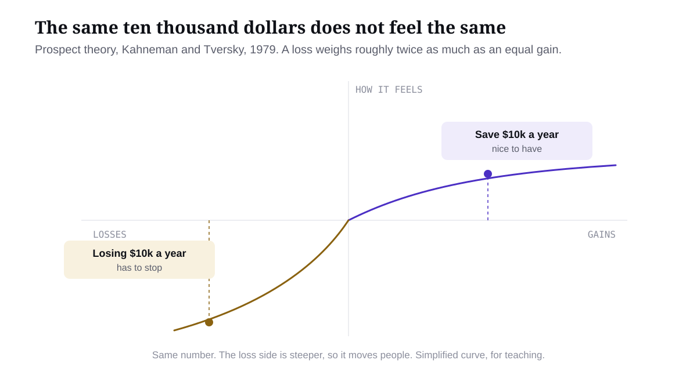
Figure 1. The same number, two very different feelings. Simplified from Kahneman and Tversky.
This is why "this could save you time" gets a polite nod and nothing else. A gain is optional. A loss is not. The owner who realises they are paying a person $65k a year to do work a system could do, and have been for three years, cannot un-know that. The loss sits in front of them every day until it is fixed.
You are not creating the loss. It was always there. Everything you build with me, the offer, the outreach, the demo, the call, exists to make a real loss visible and put a number on it.
PAIN ALWAYS CONVERTS TO MONEY
Owners describe pain in all sorts of currencies. Time. Stress. Staff. Missed calls. Slow jobs. None of those are the unit anyone buys in. Every one of them converts to dollars, and the conversion is what turns "that's annoying" into "that has to stop".
The pain as they feel it
What it actually is
"It takes ages."
Hours per week, times the hourly cost of whoever does it, times 48 weeks.
"We have someone who handles that."
That person's wage, or the share of it spent on work a system could do.
"The software does most of it."
The subscription, plus per job or per user fees, plus the support tickets nobody counts.
"We miss a few calls."
Calls missed per week, times the close rate, times the average job value.
"Jobs take longer than they should."
Extra jobs they could complete per month if the bottleneck was gone, times margin.
An illustrative example. A mid sized construction company runs its jobs through a generic CRM at around $13k a year. An office administrator works three days a week on tasks the CRM cannot do: chasing sign offs, re-entering quotes, sending reminders. She costs over $65k a year. In busy months they turn work away. Ask the owner how things are going and you get "we've got a CRM and an admin, it works fine". Add it up and the same business is paying roughly $78k a year for a system that still needs a human to babysit it. Nothing changed between those two sentences. Only the maths did. Numbers of the kind I have seen in real deals, here to show the conversion, not as a client result.
PRICE LIVES INSIDE THE SIZE OF THE PROBLEM
Once the loss has a number, price stops being about you. If a problem costs a business $2k a year and you try to charge $20k to solve it, there is a disconnect no sales skill fixes. Flip it. If the problem costs them $5 million a year, $50k for a website is a sensible decision, assuming the solution genuinely solves it. To them it is not a cost. It is an investment that pays back many times over.
The Australian government spent $96 million on a website. Bloated, yes, extreme, yes. It happened because the budget existed and the problem was worth that much to them. Price always lives inside the size of the problem.
So the question is never "what is my AI worth?" The question is "what is this market losing, and what fraction of that is an obvious yes?" A small slice of a real, quantified problem is an easy yes. A big slice of a vague one is impossible. How that becomes an actual price on an actual call is Module 6. For now, hold the principle.
Where their head is at before you call
The most useful idea in marketing is sixty years old. Eugene Schwartz wrote Breakthrough Advertising in 1966, and the ideas in it still run most successful campaigns on the internet. His central idea: a buyer's state of awareness decides what your message has to say first. Not your product. Where their head is at. Five stages. Each one up, the buyer knows more and needs less from you.
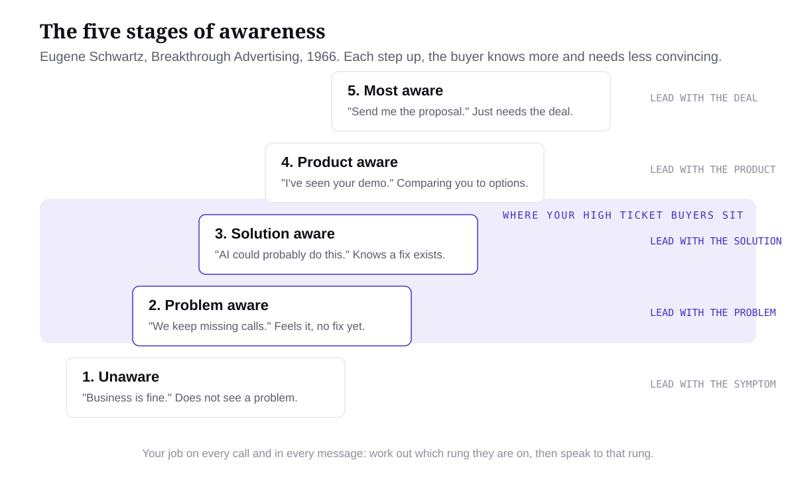
Figure 2. The five stages, with the band where most high ticket AI buyers sit.
1. UNAWARE
They do not know they have a problem. The owner whose admin "handles all that". Lead with AI, or even with the problem, and you bounce straight off. The only thing that reaches them is a symptom they recognise: "Ever had a quote sit in the inbox for three weeks and nobody noticed?"
2. PROBLEM AWARE
They feel the pain and can name it, but they do not know a fix exists, or they assume the fix is "hire someone" or "work harder". "We keep missing calls after five." "The office is flat out." Lead with the problem, in their words, and the cost of it. Make the loss visible before any solution appears.
3. SOLUTION AWARE
They know the kind of fix exists. "AI could probably do this." "There must be a system for that." They just do not know whose, or whether it would work for them. Lead with the solution, shown, not described: a demo, a before and after, a worked case.
4. PRODUCT AWARE
They know you, or they know the options. They are comparing. Lead with what makes your version the right one for them specifically: the proof, the fit, the delivery, the running costs laid out honestly. Do not explain the problem again. It reads as padding.
5. MOST AWARE
They want it. They just need the deal. Price, terms, start date, what happens next. Lead with the offer. Anything else is in the way.
THE TWO MISTAKES THAT COST THE MOST
Pitching the product to the unaware. "We build AI receptionists for trades" in front of an owner who does not think missed calls are a problem is not wrong, it is early.
Explaining the problem to the most aware. The owner who said "send me the proposal" and gets three paragraphs on why missed calls cost money feels talked down to.
Both come from the same habit: saying what you want to say instead of what they are ready to hear.
WHAT THIS MEANS FOR YOUR OFFER
A market is not one buyer, it is a spread. Where the weight of the market sits changes what your offer has to say and how much educating you will do before anyone buys.
If most of your market is
Your offer has to
Your marketing has to
Unaware
Be built around a symptom they already feel, not the system that fixes it.
Educate first. Expect a longer, more expensive path to a sale.
Problem aware
Name the problem in their words and put a dollar figure on it.
Lead with the problem and the cost. This is the sweet spot for high ticket AI.
Solution aware
Show the fix working on a business like theirs, with proof.
Lead with demos and cases. Less education, more showing.
Product aware
Be clearly different from what they have already seen, on fit, delivery and honesty about costs.
Lead with comparison and proof. Expect competitors in the room.
Most aware
Be easy to buy: clear price, clear scope, clear start.
Lead with the deal. Rare in custom AI, do not plan around it.
Most high ticket AI buyers sit on rungs two and three. Almost nobody is most aware when they meet you, because they have never bought a custom AI system before. A mostly unaware market is still a market, but a slower and more expensive one, and you should know that before you choose it.
What a market worth your time looks like
People pick a market because they know someone in it, then spend a quarter discovering nobody there has money or pain. A market worth your time is one where the maths already works before you arrive. It passes five tests. All five.
1. THEY ALREADY SPEND ON THE PROBLEM
The best signal that a market will pay you is that it is already paying someone. A part time admin. A $13k a year platform. A call answering service. Existing spend proves the problem is real enough to pay for and the money is already in the budget. You are not asking for new money. You are redirecting money that is already leaving.
2. THE PAIN HAS A DOLLAR FIGURE
A desired market is one where you can get to the dollars in one conversation. Missed calls times job value. Jobs turned away times margin. Wages on removable work. If the pain only ever converts to "it's frustrating", it is not your market, however much they complain.
3. THEY HAVE THE MONEY
Pain without budget is charity work. If they employ people and own equipment or premises, a five figure system that removes a wage is a normal decision for them. If they are a solo operator doing $90k a year, it is not, no matter how much they like you.
4. THE DECISION MAKER IS REACHABLE
Trades, construction, clinics, agencies, distributors: owners answer their phones and their DMs. Enterprise and government: the person you reach is never the person who decides. Reachability is the difference between a thirty day sales cycle and a nine month one.
5. A HUMAN IS DOING WORK A SYSTEM COULD DO
Someone in the business is manually chasing, re-entering, reminding, answering, scheduling or reporting. That person's hours are the thing you remove, and that is where your price comes from. If the work is already automated well, you are not needed. If it is genuinely human judgement, you cannot replace it. The sweet spot is repeatable work done by a person because nobody built the system yet.
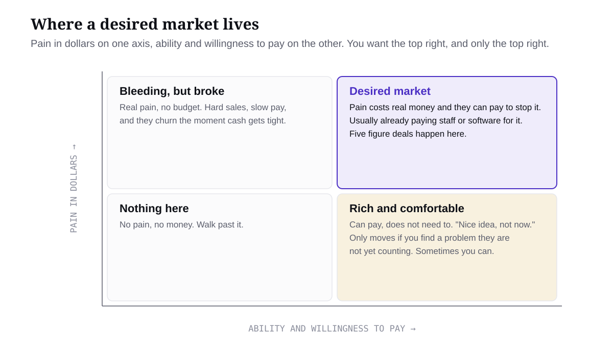
Figure 3. Two of the five tests on one grid. Only the top right is worth your time.
SCORE A CANDIDATE MARKET
Score each test from 1 to 5, where 5 means strong evidence and 1 means you are guessing or the answer is no. Be honest. A 3 that should be a 1 costs you months.
Test
What a 5 looks like
What a 1 looks like
Already spend
Paying staff or software for this exact problem today.
Named person spends hours a week on repeatable admin.
Already automated, or the work needs expert judgement.
A total of 20 or more is a market worth your time. Between 15 and 19, find out which test is dragging and whether a narrower segment fixes it (often "construction" scores 16 and "high ticket residential builders with five plus staff" scores 22). Under 15, move on without guilt. The market is not wrong, it is just not yours.
An illustrative scoring. Residential builders, five to thirty staff: 5, 5, 5, 4, 5. Total 24. That is the shape of the market behind my $22k CRM deal in Module 6. Small cafes: roughly 2, 2, 1, 4, 3. Lovely people, not a market for five figure systems.
WHY ONE MARKET BEATS FIVE
"We build systems for residential builders" earns trust before you say anything else. "We do AI for businesses" has to be convinced. Specialists charge more and sell faster for the same work. Your demo compounds: build one for a builder and it works, with light changes, for the next fifty. Your proof compounds: one case study in a niche beats ten across random industries, because the prospect sees themselves in it. Your outreach gets simpler: one list, one message, one set of objections. "But I'm limiting myself" is the feeling. You are not. There are tens of thousands of businesses in any decent niche. You are limiting how many problems you have to understand at once, which is the thing that keeps beginners stuck.
The process
Everything above is the thinking. Here is how I turn it into an offer. It is a process and it runs in one direction.
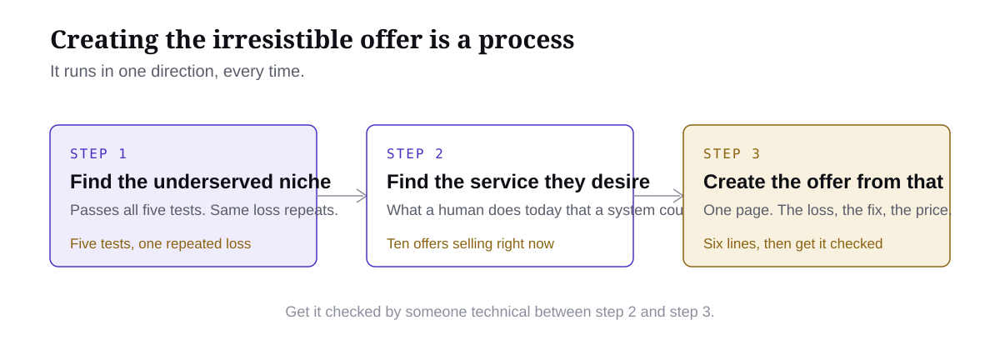
Figure 4. The three steps. They run in this order, every time.
Find the niche. A market that passes the five tests, where the same loss repeats business after business, big enough to be worth five figures to stop.
Find the service they want. The specific thing that market is already paying a human or a bad tool to do, that a system could do instead. The next lesson gives you ten of these that are selling right now.
Write the offer from that. Six lines. Who it is for, the result, by when, the guarantee, why you, how it works.
Get it checked by someone technical between steps two and three, so you never sell something that cannot be built. That is a lesson of its own in this module.
Module 2 · The Irresistible Offer · Lesson 2 of 5
Offers That Are Crushing Right Now
You do not invent an offer. You take one that is already working, move it one step, and make it yours. Here are ten, with the businesses running them.
By the end you will have
one offer picked from a list that is selling right now, and the six lines that make it yours.
Most people get stuck here, not on the selling. They sit with a blank page trying to invent an offer from nothing. You do not have to invent anything. Below are ten offers that are selling right now, with real businesses running them so you can see exactly how it all works. Pick one, make it yours, and build the whole business on it.
How this works
An offer that is already working has done the expensive part for you. Somebody has spent months and real money finding out that this type of business will pay for this result. You do not copy them. You take the proven offer and move it one step.
Same offer, new niche. An AI receptionist that sells to dentists sells to physios, vets and groomers. Same missed calls, same busy hands.
Same offer, new country. Most of these are proven in the US and barely run anywhere else. Take it home.
Same niche, slightly different offer. They sell the leads, you sell the follow up that stops those leads going cold.
Every example below links to the Meta Ad Library, which shows you every ad a business is running right now. Click through. Read their first lines. Look at their pages. The number next to each one is how many ads they had live when I checked, and a business does not keep paying for 90 versions of one offer unless that offer makes money.
1. AI voice receptionist and missed call recovery
An AI that answers the phone when nobody can, books the appointment, and texts the caller back when a call is missed. The owner already feels this loss: every missed call is a job that went to the next number on Google.
Who buys it: clinics and trades. Dental, physio, groomers, plumbers, electricians, pest control. Any business where the phone rings while every hand is busy.
How it sells: a landing page and ads with a demo number they can ring, or outreach with "ring this and hear it book you in".
Running it right now:Nova Codes with 92 ads live, one ad per niche ("Every grooming call answered and booked", "See what missed calls cost you in 60 seconds"). Switched On AI doing it locally in Australia with "Answers your phone when you can't". Marblism is a software company, not a service, but study their line: "Skip the $2,000 a month assistant", 184 ads behind it.
Make it yours: pick one niche nobody above is naming in your country, and name it in your first line.
2. Booked sales calls, paid on performance
You put qualified sales calls on their calendar and you only get paid when the calls happen. The guarantee is the offer. These are the two biggest advertisers in the whole category.
Who buys it: coaches, agencies, B2B companies, anyone whose business runs on sales calls.
How it sells: ads straight to a booked call, hundreds of versions of one line.
Running it right now:Cole Gordon, 431 ads on "Our setters perform or you don't pay". Aaron Burnham, 196 ads on "Sales calls on your calendar in 14 days". SMGP with "10 or 20 qualified meetings a month".
Make it yours: keep the guarantee, narrow to one industry, and make AI run the outreach instead of a room of setters.
3. Pay only when they show up
A twist on the last one for local businesses. You bring the appointments and they pay per appointment that actually turns up. It kills the biggest complaint about lead gen in one line.
Who buys it: clinics, med spas, gyms, dental, anyone sick of paying for leads that never show.
How it sells: ads and a page, with the "no show, no charge" promise as the headline.
Running it right now:Virtual Blue Agency, 66 ads on "Stop buying no show leads, pay only when they show up".
Make it yours: one niche, one city, with Jarvis running the reminder and confirmation sequence so your show rate is the thing you are proudest of.
4. Pay per lead for local trades
You run the ads, you qualify the enquiries, they pay per lead or a flat monthly. "We find the leads, you do the work." Plain local language wins here.
Who buys it: builders, roofers, concreters, landscapers, mortgage brokers. Trades with big job values and no marketing person.
How it sells: ads with proof in the headline, real job numbers from real clients.
Running it right now:Enhanced AI in the UK, 20 ads on "We find leads, you build" and "Your postcode, your customers". Tradie Pulse in Australia with "$44K in roofing, real jobs". Con The Builder with "$700 spent, $98K won". BrokerGrow doing the same for mortgage brokers.
Make it yours: one trade, one region, and AI doing the qualifying and booking so you are not on the phone all day.
5. AI follow up on every lead
Most businesses do not have a lead problem, they have a follow up problem. Leads sit in an inbox for days. This offer answers every lead in under a minute, by text, day or night, and keeps chasing until they book.
Who buys it: any local business already spending on leads. Real estate, home services, clinics, gyms, car dealers.
How it sells: ads and a page, or outreach to businesses you can see are already running ads (which means they already have leads going cold).
Running it right now:Text Maddie, 28 ads on "Generate more revenue from every lead". Growsy AI with "Every lead answered, even at 2am".
Make it yours: same niche as the lead gen players above, different offer. They sell the leads, you sell what happens after.
6. Custom AI lead generation system
Instead of selling leads one at a time, you build the machine: the list, the outreach, the follow up, the booking, with AI doing the writing and the chasing. Then you hand it over or run it for them.
Who buys it: B2B companies and agencies that sell to other businesses and have no outbound.
How it sells: outreach and a discovery call, because the build is different for every business. The proof is a demo of the system running.
Running it right now:Growsy AI, "10 meetings in 30 days, no SDR hire", "An SDR's output for $2,500". Search "done for you cold email system" in the Ad Library and you will find a dozen more.
Make it yours: this is the same system I teach you in Module 4 for your own business. Once you have run it for yourself, you can sell it.
7. Done for you ad campaigns, run with AI end to end
You script, build, launch and manage their ads, and AI does most of the work: the scripts, the static ads, the testing, the reporting. The client sees a campaign running and a number going up.
Who buys it: local businesses with a proven service and no idea how to advertise it. Trades, clinics, gyms, restaurants.
How it sells: ads with results in the headline, and the skills from Module 5 doing the delivery.
Running it right now:Josiah with "We film, edit and run your ads". Tradie Pulse and Con The Builder above are this offer for trades.
Make it yours: one niche, and your own ads are the case study. You will be running them anyway.
8. One CRM that replaces the stack
A business paying for ten apps and still running on spreadsheets and an admin's memory. You build one system that runs the whole company, in their language, and switch the ten apps off. This is the custom path and it is where my biggest deals come from, including the $22,000 construction CRM you will see in Module 6.
Who buys it: established businesses with staff, usually trades or construction, with a wage going on work a system could do.
How it sells: never from a page. Outreach, then a discovery call where you put a dollar figure on the mess, then a proposal.
Running it right now:Roof Flow AI, "10 apps, 10 bills, one roofing CRM that replaces them all".
Make it yours: plumbing, electrical, landscaping, any trade with ten apps and no system. Pick one and learn how it runs.
9. An AI employee for one job
Not "AI for your business". One job, done by an AI, that a person is doing today: quoting, invoicing follow up, scheduling, onboarding, reporting. Priced against the wage it replaces.
Who buys it: any business with someone spending hours a week on repeatable admin.
How it sells: ads with "Hire your first AI employee" as the hook, or a discovery call where you find the job.
Running it right now:Automation Agency, 16 ads on "Hire your first (or next) AI employee". The software players run the same line with hundreds of ads behind it, which tells you the hook works.
Make it yours: name the job in the headline. "Your quoting done by Friday, every week" beats "AI employee" every time.
10. Reviews and Google Business
Every finished job becomes a Google review, automatically, and the business climbs the map. Simple, cheap to run, easy to prove, and a great front door that leads to the bigger offers above.
Who buys it: any local business that lives on Google: trades, clinics, salons, restaurants.
How it sells: ads or outreach with their current review count next to a competitor's.
Running it right now:Nova Codes runs it as one of their lines, "Every client asked for a Google review". Search "Google reviews on autopilot" in the Ad Library for more.
Make it yours: sell it as the first step, then upgrade them to the receptionist or the follow up system once they trust you.
This list grows. As more of you get clients, I add what is working for members in the group, with the numbers, so you are never guessing what to sell.
The offer is six lines
Whichever one you pick, the offer itself is the same six lines. This is the whole thing. Write them and you have an offer you can put on a page, say on a call, or send in a message.
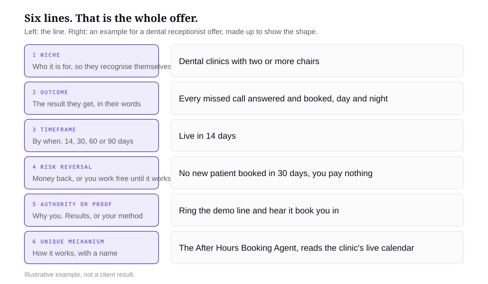
The six lines, with a made up dental example to show the shape.
Line
Yours
Niche
Outcome
Timeframe
Risk reversal
Authority or proof
Unique mechanism
Money back if you are doing it for them. "I work for free until it works" if you are doing it with them. Results for proof if you have them, your method and a demo if you do not. Nobody has results on day one. I did not either.
Three skills in your Jarvis pack do this with you. The offer menu skill reads this list and helps you pick. The offer research skill digs into one business running an offer. The opportunity finder hunts for the custom path. Run one, not all three.
If you want to find more yourself
Everything above came out of the Meta Ad Library, and you can run the same search. Your Jarvis inside Base44 cannot reach the library, so do this in Claude with the Meta Ads connector switched on (it needs an ad account, which you will have by Module 5). Two prompts.
Search the Meta Ad Library, active ads only, country United States. Run these searches one at a time, 50 results each: "AI receptionist", "missed calls", "appointment setter", "AI employee", "leads for contractors", "AI automation agency". List every page selling a service or software to business owners: page name, page id, the headline it uses. Ignore apps, games and consumer products. Then, for each page id, look up its active ads in the United States and tell me the total the library reports. Give me one table ranked by that number: page, offer in one line, niche, active ads, headline, one snapshot link. Do not invent pages or numbers.
Pick the two rows that excite you. Those are your candidates.
Module 2 · The Irresistible Offer · Lesson 3 of 5
Get Your Offer Checked
Six lines written. Before you build anything or sell anything, get someone technical to look at it.
By the end you will have
an offer that has been checked by someone technical, with the build and the promise agreed.
Your six lines are written. Do not build yet and do not sell yet. Get them checked first. Twenty minutes here saves you from the worst thing that happens in this business: signing a deal for something you cannot deliver.
Who checks it
If you are in the group or private tier, send your six lines to your technical CSM and get them to go over the offer with you. Then bring it to the weekly strategy session so I can see it too. That is what the sessions are for.
If you are doing this on your own, run it past Jarvis with the scoping skill and be honest with yourself about what you cannot build yet. Jarvis will tell you what the build involves. You decide whether you can do it.
Use the scoping skill. Here is my offer in six lines: [paste your six lines]. Tell me what has to be built to deliver it, which parts are standard and which parts are custom, what it costs to run each month, what I can safely promise, and what I should not promise yet. Be blunt. If a line in my offer cannot be delivered, say so.
What a check looks for
Four things, in this order.
Can it be built. Every word in your outcome line has to be something that exists or can be made in the timeframe you wrote.
What it costs to run. Phone numbers, call minutes, messages, software. You need this number before you price anything.
What you can promise. Your risk reversal has to be one you can actually honour. "Money back if no patient is booked in 30 days" is fine if the system books patients. It is a disaster if it only takes messages.
What you will not promise. Write this down too. Half of selling well is knowing what to say no to.
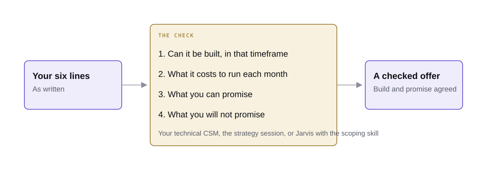
Six lines in, four checks, one offer you can sell with a straight face.
What usually changes
Almost nobody's first six lines survive untouched, and that is the point. The timeframe gets longer. The guarantee gets more specific. The mechanism gets a real name because now you know what it actually is. Your offer gets better and you get to sell it knowing it is true.
Once it is checked, write the final six lines down and keep them. The next lesson builds the demo from them, and every page, ad and call after that says the same thing.
Module 2 · The Irresistible Offer · Lesson 4 of 5
Write the Offer
Six lines, in their words, specific enough that the right owner reads it and thinks "that is me".
By the end you will have
your offer written in six lines, ready to say on a call, put on a page or send in a message.
You have picked an offer from the list and a niche to sell it to. Now write it. The whole offer is six lines, and the only thing that makes it irresistible is how specific each line is. Vague lines get polite nods. Specific lines get "when can you start".
The six lines, one at a time
Niche. Name them so they recognise themselves in the first three words. Not "businesses". Not even "trades". "Plumbing companies with three or more vans." If the owner cannot tell whether it is for them, it is not for them.
Outcome. The result, in the words they would use at the pub. Not "optimised inbound communication". "Every missed call answered and booked."
Timeframe. By when. 14, 30, 60 or 90 days. A result with no date is a wish.
Risk reversal. If you are doing it for them, money back. If you are doing it with them, "I work for free until it works". Pick the one you can honour and say it plainly.
Authority or proof. Why you. If you have results, one real number. If you do not, your method and a demo they can touch. Nobody has results on day one. The demo is your proof until the first client is.
Unique mechanism. How it works, with a name. "The After Hours Booking Agent" sounds like a thing you built. "AI receptionist" sounds like everyone else.
Let Jarvis draft it with you
I have an offer creation skill in your Jarvis pack that follows exactly this structure. Give it the raw material and it hands back the six lines. You edit until it sounds like you.
Use the offer creation skill. The offer I picked: [which one from the list]. The niche: [who, how big, where]. What I know about their problem: [two or three lines in their words]. What I can build or deliver: [what you actually have]. Results I have, if any: [real numbers or none]. Return exactly six lines: niche, outcome, timeframe, risk reversal, authority or proof, unique mechanism. Make every line specific to this niche. No fluff and no extra sections.
An example, start to finish
Say you picked the AI receptionist and you know physio clinics because your sister runs one. Made up numbers, to show the shape. Niche: physio clinics with two or more practitioners. Outcome: every missed call answered and the patient booked straight into your calendar. Timeframe: live in 14 days. Risk reversal: if it does not book a new patient in the first 30 days, you pay nothing. Authority or proof: ring the demo line and hear it book you in. Unique mechanism: the After Hours Booking Agent, trained on your services and reading your live diary.
Read those six lines back as if you were the clinic owner. That is exactly my problem. They have clearly done this before. There is no risk. That is what irresistible feels like from the other side.
The test
Show your six lines to one person in that niche, or read them to Jarvis playing that owner. Ask one question: is this for you, yes or no? If they hesitate, the niche line is too wide or the outcome is in your words instead of theirs. Fix it and ask again. When you get a clean yes, take it to the next lesson and get it checked.
Module 2 · The Irresistible Offer · Lesson 5 of 5
Build the Demo
A prospect who can see it working is a different conversation to a prospect who has to imagine it.
By the end you will have
a rough working demo of your offer that a prospect in your niche can see or hear in under two minutes.
Everything changes when they can touch it. A business owner who has to imagine an AI receptionist is sceptical. A business owner who rings a number, hears it answer in their trade's language and watches a booking land in a calendar has already half bought. Build the demo before you talk to anyone.
Why the demo closes
Three reasons. It proves you can build the thing, which on day one is your only proof. It moves the conversation from "could this work" to "what would this look like for us". And it lets you sell without a single client result, because the demo is the result.
It also protects you. If you cannot build a rough demo of your offer in a day or two with Jarvis, you have learned something important before you sold it.
The minimum demo for each offer
Rough is fine. Personal to the niche is not optional. The owner needs to see their own business in it.
Offer
The minimum demo
AI receptionist, missed call recovery, after hours answering
A phone number they can ring right now. It answers in the voice of a business in their niche, takes the details or books a time, and texts a confirmation.
AI follow up on every lead
They fill in a test form on your phone and get a text back in under a minute, then a second one a few minutes later. Show the conversation.
Booked calls, pay per show, pay per lead
A two minute screen video of the system: the list, the messages going out, a reply, a booking landing in a calendar.
Done for you ads
Two or three ads you made for a business in their niche, plus a simple page. Your own campaign numbers once you have them.
One CRM that replaces the stack, AI employee
A two minute screen video of a rough version built for a business like theirs: a job coming in, moving through, the admin disappearing. Never a slide deck.
Reviews and Google Business
Send them a review request text from your system while they watch, and show a before and after of a listing.
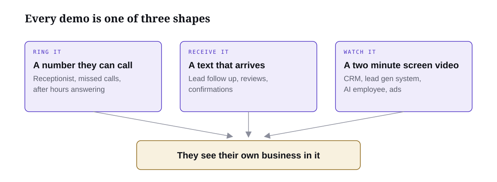
Every demo is one of three shapes. Pick the one your offer needs.
Build it with Jarvis in a day
You are not building the finished product. You are building enough that the right owner sees their business in it. Keep it to one afternoon.
Pick one real business in your niche as the model. Their services, their hours, their words.
Tell Jarvis what the demo has to do, in one paragraph, using your six lines.
Build the smallest thing that does it: one number, one form, or one screen.
Test it as the owner would. Ring it. Fill it in. Break it. Fix the one thing that broke.
Record a two minute walkthrough on your phone, in case you cannot demo live.
I am building a demo for this offer: [paste your six lines]. The model business is [name, niche, services, hours]. Build me the smallest working version I can show a prospect in two minutes: [a phone number that answers and books / a form that triggers a text follow up / a one screen system that shows a job moving through]. Use the model business's real services and language. Tell me what you need from me to make it live, and what it will cost to run.
Keep it rough
A polished demo of the wrong thing wastes a week. A rough demo of the right thing gets you a client who then pays you to polish it. Your first demo should slightly embarrass you. Mine did. The owner did not care, because it answered the phone and booked the job.
Once it works, you have everything Module 3 needs: an offer in six lines, a demo they can touch, and a reason to put a page in front of them.
Module 3 · Funnels · Lesson 1 of 5
Your CRM
One place for every lead, every call and every dollar. I am building it for you so you never have to.
By the end you will have
a clear picture of the CRM you are getting, the nine stages every lead moves through, and the sheet to run them in until your login lands.
I am going to be straight with you. Most people in this business lose deals in the gaps. Someone books, nobody confirms, they forget. Someone says "send me a proposal", it goes out, nobody chases it. A lead comes in from an ad at 9pm and gets a reply on Thursday. None of that is a sales problem. It is a tracking problem, and I am not going to let you have it.
So I am building you a CRM. Not a bloated one you have to learn. One screen that runs your whole pipeline, and your Jarvis does the moving.
What it does
Every lead in one place. Name, phone, email, business, where they came from, what stage they are at, your notes, and the next thing that has to happen with a date on it.
One pipeline, nine fixed stages. I chose the stages. You do not customise them. They match exactly how we sell in the sales module, so if you follow the stages you are following the process.
Leads arrive on their own. Someone fills in your ad form, they appear. Someone books through your page, they appear and move straight to Call 1 booked. Jarvis adds the ones you find through outreach.
Jarvis runs the follow up. Confirmations, reminders, the no show chase, the proposal chase. The CRM tells Jarvis when a lead changes stage, Jarvis sends what needs sending from your own number and your own inbox. You do not build automations and you do not debug them.
One numbers card, every morning. Ad spend, leads, cost per lead, calls booked, cost per booked call, show rate, close rate, revenue. Jarvis reads your ad account each morning and writes the spend in. The rest the CRM works out from what happened in the pipeline.
One screen per lead. Every message, every call, every stage move, in one timeline. When someone rings back after three weeks you know exactly where you left it in five seconds.
The nine stages
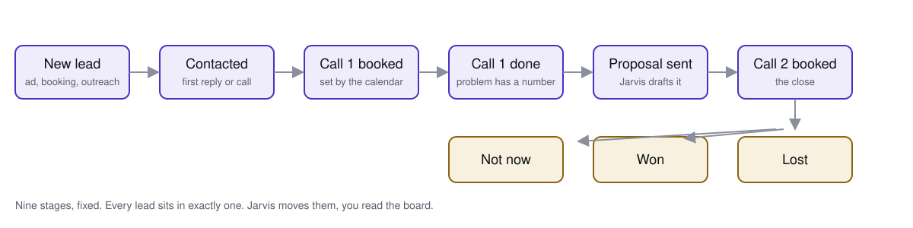
The whole business on one board. If a lead is not moving right, something needs to happen today.
Stage
What it means
New lead
They came in and nobody has spoken to them yet.
Contacted
You or Jarvis has made first contact.
Call 1 booked
A time is in both diaries. The calendar sets this, not you.
Call 1 done
You understand the business and the problem has a dollar figure on it.
Proposal sent
The proposal is with them. Jarvis is chasing it.
Call 2 booked
The close is in the diary.
Won
Paid. Not "verbal yes". Paid.
Lost
A clear no. Leave the reason in the notes.
Not now
Right fit, wrong time. Jarvis keeps them warm for months without you lifting a finger.
Where it is at
It is being built right now. When it is ready you get a login, your leads only, and a two minute walkthrough. Nothing to install, nothing to connect yourself.
Until then, do not wait. Open a sheet, make one column per stage above, and put every person you speak to in it from today. When your login lands we move the sheet across in an afternoon. The habit is the thing, not the software.
Module 3 · Funnels · Lesson 2 of 5
What the Funnel Is Actually For
A website tells people who you are. A funnel takes one problem, says it out loud, and puts the right person on your calendar.
By the end you will have
a clear line in your head between the website and the funnel, so every ad and every message you send points at the page that actually sells.
Before you build a page, you need to know which page you are building. Most people starting out build a website, send traffic to it, and wonder why nobody books. I did it too. This lesson fixes that, and it changes what you build in the next three lessons.
A website and a funnel are two different things
A website is for brand awareness. It is the thing someone looks at when they already know your name and want to check you are real. Who you are, an overview of what you do, the clients you have worked with, their logos, a bit of story. It is useful. It makes you look credible.
It does not sell.
A funnel, which for us just means a landing page, is built for one job. You take one specific problem you solve, and you speak about that pain at its core. Not an overview. Not everything you could do. One problem, the real cost of it, the way you fix it, and one action: book the call.
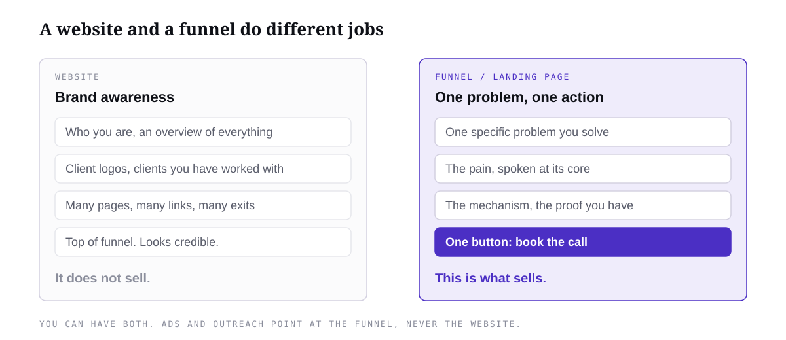
Both have a place. Only one of them sells.
Side by side
Website
Funnel (landing page)
Brand awareness. Proves you exist.
Sells one thing. Gets a booked call.
Overview of everything you do.
One specific problem you solve.
Clients, logos, story.
The pain said at its core, then the fix.
Many pages, many links, many ways to leave.
One page, one button, nowhere else to go.
The visitor is browsing.
The visitor is deciding whether this is their problem.
Traffic arrives by name or by search.
Traffic arrives from an ad or a message about that exact problem.
Why the funnel sells and the website does not
Think about who lands on each one. Someone on your website is browsing. They are forming an opinion of you. Someone on your landing page came from an ad or a message that named their problem. They are asking one question: is this my problem, and can these people fix it? The page answers that and nothing else, then gives them one thing to do.
That is why the page speaks about the pain at its core. A plumbing business does not want "AI automation". They want the phone answered when every hand is on a job, because every missed call is a job that went to the next plumber. The landing page says that. The website says "we build AI systems for trades". Only one of those gets someone to book a call.
What goes on the page
Who it is for, in one line, so the right person knows they are in the right place.
The problem and what it costs them, in their words.
How you fix it, in plain language.
Proof if you have it. A working demonstration if you do not.
One button. Book the call.
Have both. Point everything at the funnel.
Have a website if you want one. Put the logos on it when you have them. But every ad you run and every message you send points at the landing page. Never at the website. The website is where people go after they already want to work with you, to check you are real.
The copy on your landing page is not new work. It is your offer from Module 2, said out loud to one person with one problem. If the offer is sharp, the page is easy. If the page is hard to write, go back to the offer.
What we build in this module
Your CRM, where every lead, call and proposal lives.
The landing page, on your domain, built by Jarvis from your offer.
The thank you page, which confirms the booking and keeps selling.
Automated follow up, so nobody goes quiet between booking and the call.
All four are in place before you send a single message or run a single ad. That is the whole reason this module comes before client acquisition.
Module 3 · Funnels · Lesson 3 of 5
Build the Page
One page, one offer, one action. The copy is already written, it is your offer from Module 2. Jarvis builds the rest.
By the end you will have
a live landing page on your domain that says your offer clearly, filters the visitor and books them into your calendar.
This lesson is short because the hard part is already done. The page is your offer, laid out in the order a stranger needs to read it, with one button at the end. Jarvis has a skill for this. The pages it builds are clean and simple, and simple is what you want. Your job is to feed it the offer and check the result.
Your offer becomes the page
Your offer from Module 2 already has the six pieces the page needs. The page is those six pieces, in order, in plain language.
Offer piece
Where it goes on the page
Niche
The callout line at the very top. Who this is for.
Outcome
The headline. The result they get, in their words, not the tool.
Timeframe
In the headline or the line under it, only if you can stand behind it.
Unique mechanism
One short line under the headline. How you get the outcome.
Authority and proof
A strip of proof if you have it. A working demonstration if you do not. Never invented.
Risk reversal
Near the button. What happens if it does not work, stated plainly, with the conditions beside it.
Under those, the pain. One short section that says the problem at its core and what it costs them. Then the one button: see if you qualify.
No price on the page. Ever. Price lives in the sales conversation. Lead with the outcome they want, then the mechanism.
Give it to Jarvis
The landing page skill is in the skill pack you loaded in Module 1. If you skipped that, paste the skill file into Jarvis and ask it to save it as a skill, then run this.
Run the Jarvis Landing Page skill.
Offer record: [paste your offer from Module 2: niche, outcome, timeframe, risk reversal, authority or proof, unique mechanism]
Domain: [yourdomain.com]
Video: [link to your video if you have one, otherwise say "no video yet" and give me a placeholder]
Proof I actually have: [testimonials, results, client names with permission, or "none yet"]
Build the compact version: audience callout, one outcome headline, one mechanism line, the video, then the "see if you qualify" button. Keep it simple. No price. No invented proof, logos or numbers. Put it on my domain and give me the live link, the copy, and the list of anything you could not verify.
Read the page as the buyer. Does the headline say the outcome or the tool? Does the pain section sound like something they would say? Is there exactly one thing to click? If any answer is no, tell Jarvis the one change and run it again. One change per message.
The form and the booking
The button does not go straight to a calendar. It goes to a short application, then the calendar. The application is how you stop spending an hour on someone who was never going to buy.
Fit questions, one per screen. Three to five questions that tell you whether this is a real business with the problem you fix. What they do, roughly how big they are, whether they have the problem now, and whether they are the person who decides.
Contact details, one screen. Name, email and phone on the last screen, after the fit questions, not before.
The calendar. The next page says "Thanks, you qualify. Let's get you booked in" and shows your calendar. They pick a time.
The thank you page. Only after a real booking exists. That is the next lesson.
Add the application and booking to the landing page.
Fit questions, one per screen, in this order:
1. [What does your business do?]
2. [Roughly how many staff?]
3. [Which of these is costing you the most right now: a, b, c]
4. [Are you the owner or the person who decides on this?]
Then one screen for name, email and phone. Keep answers if they press back. The next page says "Thanks, you qualify. Let's get you booked in" and shows my calendar: [calendar link]. Do not show a booking confirmation until a booking actually exists. Give me the live link and tell me what you could not connect.
Keep the questions few. The form is a filter, not an interview. The interview is call one.
When it is live, go through the whole thing on your phone as a stranger: read, click, answer, book a test slot. If you get stuck anywhere, fix that before any traffic sees it.
Module 3 · Funnels · Lesson 4 of 5
The Thank You Page
They booked. The thank you page confirms it, tells them exactly what to do next, and keeps selling while they wait.
By the end you will have
a thank you page with a short video from you, the next steps, and whatever proof you have, so the person who booked actually shows up.
Most people treat the thank you page as a receipt. "You're booked, see you then." That is a wasted page. The person on it has just made a decision. They are more open to you right now than they will be again until the call. Use it.
What the page does
Confirms the booking. The date, the time in their timezone, and where the call happens. Clear, at the top, readable without watching anything.
Carries a video from you. You, to camera, telling them what to do next and building rapport. This is the centre of the page.
Gives them the next steps. Accept the meeting in their calendar. Reply yes to the confirmation email or text. Bring the one or two things that make the call useful.
Shows proof. This is the big one. Testimonials if you have them. Why your system, why you. If you do not have testimonials yet, a working demonstration of the system does the job honestly.
The video
Sixty to ninety seconds. Phone, natural light, the way you talk on a call. It is not a pitch. It is you being a real person who is about to help them.
Open. Thanks for booking, here is who I am in one line, and here is what the call is for.
The three asks. Accept the calendar invite so it is locked in. Reply yes to the email or text you are about to get, so I know you have seen it. Have a rough idea of how a job comes into your business and where it gets messy, because that is what we will dig into.
What they get. On the call we work out exactly where the problem is costing you and whether what I build fits. If it does not, I will tell you straight.
Rapport. One sentence about why you do this, or who you have done it for. Real, not polished.
Close. See you on the day.
If you have proof, say it in the video too. "We did this for a roofing company in Brisbane, you will see it on this page." If you do not, do not fake it. Show the system working instead.
Proof on the page
Under the video: testimonials, with names and businesses where you have permission. Screenshots of real results. A short demonstration of the system doing the job, if that is what you have. Then a few honest answers to the things that stop people showing up: what if we already use software, how much of my time does this take, what access do you need, what does support look like after. Two or three lines each. Specifics, not disclaimers.
Give it to Jarvis
The confirmation page skill is in the skill pack. Run it after the landing page exists, so it keeps the same offer and look.
Run the Jarvis Confirmation Page skill.
Landing page: [live link]
Offer record: [paste your offer]
Booking tool: [calendar tool you use] and the calendar link: [link]
Video: [link to the thank you video, or "not filmed yet, give me a placeholder and the script"]
Proof I actually have: [testimonials with permission, results, demo link, or "none yet"]
The objections my buyers raise: [existing software, time, access, support, cost, anything you have heard]
Build the page in this order: booking confirmed with date, time and timezone; the video; three next steps (accept the calendar invite, reply yes to the confirmation message, what to have ready); proof; short answers to the objections. Match the landing page look. No fake dates, times or meeting links. Do not claim a booking is confirmed until the calendar says so. Give me the live link, the video script, and anything you could not connect or verify.
Then film the video from the script Jarvis gives you, in one sitting, and send it back with "add this video to the thank you page". Book a test slot through your own page and land here as the buyer. If you cannot see the time without watching the video, or there is no real proof or demonstration on the page, fix that first.
Module 3 · Funnels · Lesson 5 of 5
Automated Follow Up
Nobody goes quiet between booking and the call, and nobody who said not now gets forgotten. Jarvis builds it. You do not touch it.
By the end you will have
your full follow up system written and ready to connect: confirmation, reminders, no show recovery and the long nurture, with every reply stopping the sequence.
I am not going to lecture you on why follow up matters. You need the follow up to exist and run without you. Jarvis writes every message and every rule. Your CRM sends them.
What the system does
When
What happens
They book
Confirmation by email and text straight away, with the time, the link, and the three asks from the thank you page. One short prep message the day before. A reminder an hour out.
They do not show
A message within the hour that makes it easy to rebook. A second one the next day. Then it stops.
They reschedule or cancel
The old reminders are cancelled. New ones are built for the new time.
They say not right now
A long, slow nurture. One useful message every couple of weeks: a result, a short demonstration, an answer to a common question. Never "just checking in".
They reply, any time
The sequence stops. You take over. Nothing automated sends again until you say so.
They opt out
Honoured everywhere, immediately.
Every message has one job. Confirm the logistics, answer one objection with something real, help them prepare, or remind them. A same day booking gets the short version, not every message fired at once.
Give it to Jarvis
The pre call follow up skill is in the skill pack. It writes the messages and the rules that decide when each one goes and when it stops.
Run the Jarvis Pre-call Follow-up skill.
Offer record: [paste your offer]
Landing page: [link]
Thank you page: [link]
Calendar tool: [tool] with typical booking lead time: [same day / 1 to 3 days / a week]
Proof and prep assets I actually have: [thank you video, demo, testimonials, or "none yet"]
The objections my buyers raise: [list]
Write the full system: booked (confirmation, day before prep, one hour reminder), no show (two recovery messages), reschedule and cancel (cancel old reminders, build new), not now (a long nurture, one message every two weeks for three months, each one useful), and the stop rules: any reply pauses everything and hands to me, opt outs are honoured everywhere, no duplicate sends. Text messages short, email can explain. No invented results. Give me every message, the event table (trigger, who, when, stop condition), the fields my CRM needs to hold, and a test plan that covers booking, reply, reschedule, cancellation, opt out and a duplicate event.
What you get back
Four things: the messages, grouped by path; an event table that says what triggers each one, when it goes and what stops it; the fields your CRM holds for the rules to work (booking time, timezone, status, last reply, opt out); and a test plan. Keep all four against the offer. When your CRM login lands, this is what gets connected. Nothing has to be rewritten.
The sending side lives in your CRM: your own number for text, your own inbox for email. Jarvis writes, the CRM sends. You connect nothing yourself.
Read it once, then leave it alone
Read every message as the buyer. Delete anything that sounds like a robot. Make sure each one would be fine to receive at the time it is sent. Then do not touch it again until the numbers tell you to. The whole point is that it runs without you.
Six steps, one list, one message on every channel. I want you to see the whole thing before you build any one piece of it.
By the end you will have
the whole outreach system in your head, and you will know which parts Jarvis runs and which parts are yours.
I will be straight with you. Ads are how I have always got clients, and outreach is the part I had to build properly for this programme. So this module is not theory I picked up somewhere. It is the system we run on our own offer, written down step by step so you can run it on yours. It costs nothing but your time, and every tool in it is free at the volume you will be working at.
Why outreach comes first
Ads scale a business. Outreach starts one. When you pick up the phone and talk to thirty business owners, you learn in a week what your market actually says about the problem, what words they use, what they have already tried, and whether your offer lands. That knowledge is what makes your ads work later. Skip it and you will spend money learning it the expensive way.
There is a second reason. Your first two or three clients almost never come from an ad. They come from a conversation. This module is how you have those conversations on purpose instead of hoping they happen.
The six steps
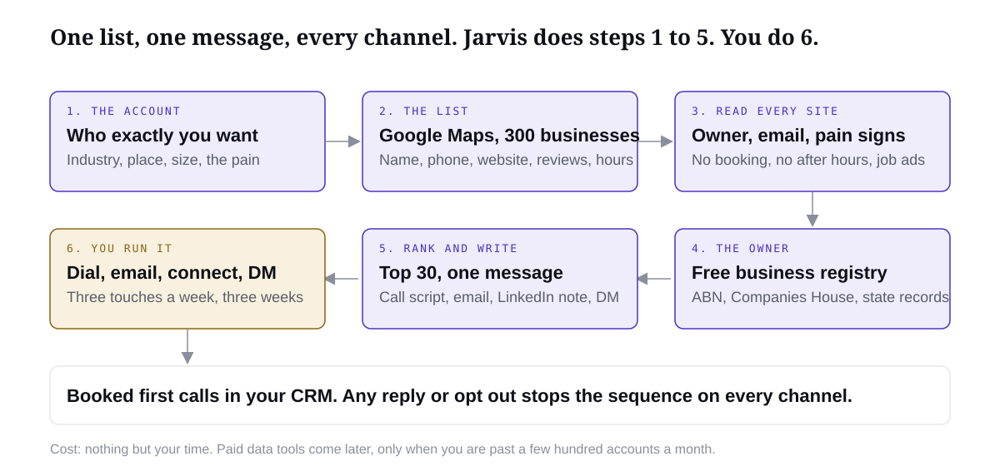
The whole system. Jarvis does the digging in steps one to five. Step six is you.
Tell Jarvis the account. Not "plumbers". Plumbing businesses in Brisbane with three or more vans, who miss calls because everyone is on the tools. Industry, place, size, and the pain your offer fixes. You already have this from Module 2.
Jarvis builds the list from Google Maps. Business name, phone, address, website, hours, rating, review count. Three hundred businesses in an afternoon. Google gives you free credit and a free monthly allowance, so at your volume this costs nothing. It works in every country Google Maps covers.
Jarvis reads every website. It opens the site and the contact page and pulls the owner's name, the email, how they take bookings, what services they sell, roughly how many staff, and the signs of your pain: no online booking, no after hours answer, a job ad for an admin, a website that has not been touched in years. For local businesses the email is on the site most of the time.
Jarvis finds the owner. Every country has a free business registry. In Australia it is ABN Lookup. In the UK, Companies House. In the US, your state's business search. Jarvis checks the registered owner so you are calling a name, not a switchboard. For the handful of accounts where the registry gives nothing, you look them up on LinkedIn by hand. Top accounts only.
Jarvis ranks them and writes the message. Pain signs, size and how reachable they are. You read the top thirty yourself before you trust the ranking. Then Jarvis writes one message, one angle, adapted to each channel: a call script, an email, a LinkedIn note, a DM. Same problem everywhere, different words, because the same words on every channel reads like a machine.
You run it. You dial the listed number. Email goes from your own business mailbox through your CRM. LinkedIn and DMs by hand. Three touches a week for three weeks, every touch logged in the pipeline. The moment anyone replies, books or asks you to stop, the sequence stops on every channel.
What you get out of it
A ranked list of real businesses with a phone number, an email where the site had one, the owner's name where the registry had one, a specific reason you are contacting each one, and a written sequence, all sitting in your CRM ready to run. That is a campaign, not a pile of scraped names.
The numbers to keep in your head
These are working assumptions, not promises. Two closed five figure deals a month needs about seven first calls. If a well ranked list books one call in twenty, that is around 140 good accounts a month, which means Jarvis ranking somewhere between 400 and 600 raw accounts. Track it honestly from day one: accounts, people you could actually reach, conversations, first calls booked, first calls attended, second calls, deals won, cash in. Your CRM shows you this on one card.
Where this is weaker than paid tools, and why I do not care yet
Paid data tools find more emails, especially for companies with staff and no public address. They are faster past a few hundred accounts a month. Neither they nor this path gives you reliable mobile numbers, so humans dial the listed number either way. For trades, clinics and local services the phone is the main channel anyway, so the gap barely matters. When you are scaling past a few hundred accounts a month, the last lesson in this module shows you the upgrade. Until then, you do not need to spend a dollar on data.
The rules that keep you out of trouble
A scraped mobile number is not permission to text it. SMS only where the rules in your country allow it and the person has a reason to hear from you.
Every email has your real name, your business and a way to opt out.
A reply, a booking or a "stop" ends the sequence everywhere, the same day.
Cold email from one business inbox is fine at this volume. Do not buy a list and blast it. That is how you burn a domain you will need for the next five years.
The next seven lessons build each piece. Read this one twice first, so you always know where you are in the system.
Ads are the most consistent way I know to scale this business. They come down to what you say on camera and four numbers.
By the end you will have
a clear picture of how paid ads work for your offer, your four target numbers, and my rule for scaling, fixing or killing every ad you run.
Ads are one of the best things you can crack in this business. Outreach gets you your first clients and teaches you the market. Ads are what scale it. This lesson is the education piece: how paid ads actually work for an offer like yours, which numbers decide whether you are winning, and the rules for what to do with every ad you run. The next lesson gives you the skills that do the work.
Why ads are so powerful
Outreach is one to one. You call an owner, you have the conversation, you move to the next one. How many you reach this week depends entirely on how many you dial. Ads are one to many. You say the message once, on camera, and Meta puts it in front of every business owner it can find who looks like your buyer. In every city you choose. While you sleep.
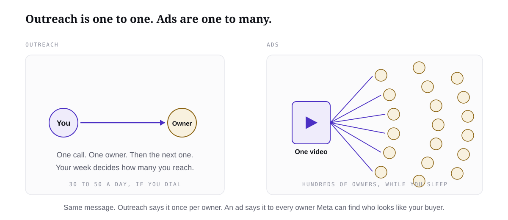
Same message. One of them scales with your hours, the other does not.
That is the whole reason I want you to crack this. Not because ads are cheap at the start, they are not, and not because they are easy. Because they are the most consistent way to scale. An ad tells you within days whether a message works, and when it works you can turn the budget up without finding more hours in your week.
The whole game in one line
Strip away the jargon and this is it: test as many angles as possible and find as many winners as possible. An angle is one way of talking about your offer. One angle leads with the problem that is costing the owner money. Another leads with the result they want. Another leads with the objection they already have in their head. You put each one in front of real people, the market tells you which ones it responds to, and you make more of those.
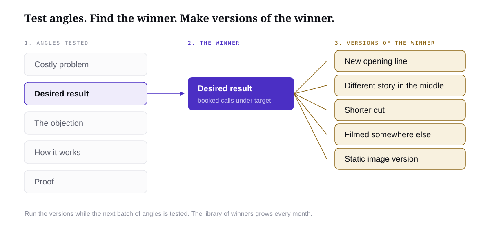
Test angles. Find the winner. Make versions of the winner. Repeat.
The words do the targeting now
Ads used to be about the settings. You opened the campaign and chose who to target: ages, interests, job titles, cities. Meta's new ad system changed that. Now what you say in your video is what finds the right person. Meta watches who stops scrolling, who keeps watching, who clicks, and it goes and finds more people like them on its own.
So if your ad opens with "if you run a plumbing business with more than five vans and your office is drowning in quotes", Meta finds plumbers with five vans and a drowning office. If your ad opens with "AI is changing everything", Meta finds people who like watching videos about AI, and almost none of them will buy a five figure system. This is good news for you. The thing that decides your results is the thing you control completely: the words, and the person they are aimed at.
Be specific or it does not work
Being general does not work here. If you were selling a hoodie you could be broad, and even then the people who win find pockets. You are selling a specific system to a specific kind of business owner with a specific pain. The more precisely your ad names that person and that pain, the cheaper every number in your account gets.
This is exactly why I made you do the market work in the offer module. The niche, the problem they already know they have, the words they use for it: that research is your ad. You are not inventing anything new. You are saying your offer out loud to a stranger who gives you eight seconds.
What a customer can cost you
At the end of the day, if you can acquire a customer for less than you get paid, it works. That is the floor. The number you measure is CAC, cost to acquire a customer: all the ad spend it took, divided by the number of clients who paid.
At the very least I want you at a 50 percent CAC. It costs you half of what you charge to win the client. Sell for $5,000, spend $2,500 to get that client. I would call that a pretty bad CAC, but it still works, because there is more than one ad and more than one month, and it does not break you while you learn.
People with deep pockets who bank on upsells and recurring revenue sometimes buy customers at a loss on purpose, because they make it back later. That is not you yet. Get it as low as you can, and never run a number you cannot afford to lose while an ad is still being tested.
It also depends on your ticket. A booked call for a $1,000 offer and a booked call for a $35,000 offer cost very different amounts, and that is fine. At the higher price you can afford a higher cost for the click, the lead and the booked call, because one close pays for a lot of misses. The trade is that fewer people can pay that amount. Smaller pool, more expensive to reach, each one worth a lot more.
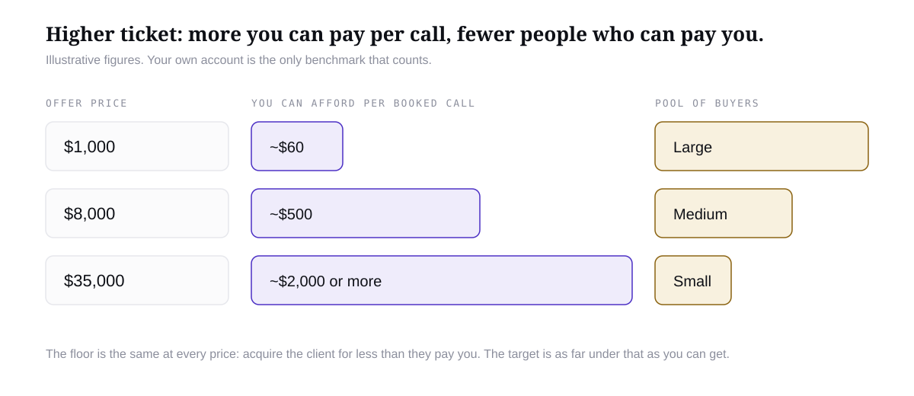
Higher ticket, higher affordable cost per call, smaller pool. The figures are illustrative.
Your four numbers
Work backwards from your price, before you spend a dollar. Say you sell at $8,000 and you want CAC under 25 percent. That gives you $2,000 to spend per client won. If you close one in four qualified calls, each booked call can cost up to $500. If one in three leads books a call, each lead can cost up to about $165. Those four numbers, price, spend per client, cost per booked call, cost per lead, are the targets every ad gets measured against. The ratios here are illustrative; yours come from your own calls, and your first guesses are fine.
Number
Example at $8,000
Yours
Your price
$8,000
Most you will spend to win one client
$2,000
Most one qualified booked call can cost
$500
Most one lead can cost
$165
The numbers inside Meta
You will see a wall of numbers inside Meta. These are the ones that matter, in the order the buyer moves through them. Any benchmark you read online, including my examples, is illustrative. Your own account is the only benchmark that counts.
Number
What it means
What moves it
CPM
What Meta charges to show your ad a thousand times.
Who you are reaching and how crowded that audience is. Mostly out of your hands. Do not obsess over it.
CTR
Of the people who saw it, how many clicked.
The hook. The first three seconds and the first line of text. Low CTR means the wrong people, or a boring opening.
CPC
What each click costs you.
CPM divided by CTR. Fix the hook and CPC falls on its own.
Cost per lead
What it costs for one person to give you their details on your page.
The match between the ad and the page. If the ad promises one thing and the page says another, this blows out.
Cost per qualified call booked
What it costs to get one real buyer, who passed your questions, onto your calendar.
Your qualifying questions and your booking flow from the funnels module. This is the number you plan your budget around.
Show rate
Of the calls booked, how many turned up.
The reminders and the pre call content between booking and the call. Below 60 percent, fix the follow up before you touch the ads.
Close rate
Of the calls that happened, how many bought.
Your sales process. Ads cannot fix a weak call.
CAC
Total spend divided by clients won.
Everything above. This is the only number that decides whether ads are working.
Notice that half of these are not ad numbers at all. Show rate and close rate live in your funnel and on your calls. Cheap clicks with a weak funnel behind them is the most common way I see people lose money on Meta, and the dashboard will never tell you that is what is happening. Track the whole line, click to cash.
One winner, many versions
Once you find a winning angle, an ad that is hitting the numbers above, do not go hunting for a brand new idea. Make versions of that same ad, over and over. Same angle, different opening line. Same script, different setting. Same words as a static image instead of video.
Two reasons. Every ad wears out, and a fresh version resets the cost. And you have learned something expensive: this angle works for this market. Every version starts from a proven base, where a new angle starts from zero. The rhythm I use: test three to five new angles, find one winner, make five versions of it, run those while you test the next batch. The library of winners grows and the account gets more stable every month.
Scale, fix or kill
Every ad you run ends up in one of three places, and only one of them is good. The skill is knowing which one you are in and acting fast. Give each ad enough spend to be judged, roughly the cost of one or two booked calls, and never judge an ad on its first day.
Scale. It is booking qualified calls at or under your target cost. Raise the budget slowly, around 20 percent every two or three days, so Meta does not reset what it learned. Make versions of it. Do not touch the ad itself.
Fix. One number is broken and the rest are fine. High CTR but expensive leads means the page does not match the ad. Cheap leads but no bookings means your qualifying questions or booking flow are the problem. Plenty of bookings but a low show rate means the follow up is weak. Fix the one broken step. Do not rewrite the ad.
Kill. It has had its fair spend and the cost per qualified call is well over target, or nobody is clicking at all. Turn it off and write down why in one line. A dead ad with a reason attached is data. A dead ad you keep running out of hope is just a bill.
Log the decision on every ad in your CRM: the ad, the outcome, the reason, the next action. In a month that record tells you exactly what this market responds to. Write your four numbers down now, keep them where you can see them, and bring them to the next lesson.
The Ad Skills: Script, Record, Edit, Statics, Set Up
Jarvis writes the scripts, you film them, Jarvis edits them, makes the statics and sets the campaign up with you. One order, every time.
By the end you will have
a batch of recorded and edited video ads, a set of static ads, and a Meta campaign set up and ready to turn on.
You know how ads work now. This lesson is the doing. Four skills in a fixed order, with you in the middle holding the phone: Jarvis writes the scripts, you film them, Jarvis edits them, Jarvis makes the static ads, then Jarvis walks you through setting the campaign up inside Meta. By the end you have a batch of ads in the account, ready to turn on, pointing at the page you built in the funnels module.
If you loaded the skill pack in Module 1, Jarvis already has these. If you skipped it, paste each skill file into Jarvis and ask it to save it as a skill before you start.
The order
Step
Who does it
What comes out
1. Script
Ad Scripting skill
Five to ten video scripts, each on a different angle, 30 to 60 seconds
2. Record
You and your phone
Each script filmed, a few takes, best take picked
3. Edit
Ad Editing skill
Each take cut to the hook, captioned, three cuts per script
4. Statics
Static Ad Creator skill
Image ads on the same angles, for people who do not watch video
5. Set up
Meta Campaign Setup skill
One campaign, one ad set, one ad per angle, named, budgeted, with a check schedule
Step 1: scripting
The Ad Scripting skill takes the three things you already made in the offer module, your offer, your market research and where your buyer sits on the awareness ladder, and turns them into scripts you can read to camera. Every script tests one angle and says which one in its heading, so when one wins you know why.
Run the Ad Scripting skill. My offer: [paste your six line offer]. My market research: [paste the brief from the offer module]. My buyer is mostly [problem aware / solution aware] about this. Write me eight video ad scripts, each 30 to 60 seconds, each testing a different angle: the costly problem, the desired result, the main objection, how the system works, and proof I actually have. Hook in the first three seconds, spoken plain language the way I talk on a call, name the exact kind of business owner in the first line, and end every script with the same call to action to my booking page. Label each script with the angle it tests. No price, no invented results, no made up testimonials.
Read them out loud before you record anything. Cut any line you would never say to a real business owner on the phone. If a script needs a number you do not have, delete the number rather than inventing it. Then pick the five you believe in most and film those first.
Step 2: filming
Just film a talking head video. Your phone, decent light, you talking to one owner the way you talk on a call. I show you exactly how I do mine in the video for this lesson. Do not overthink it, the ads that work for this offer are a real person saying a real thing, not a production.
Examples that work. Blake adds his winning ad examples here.
Once you have a winning angle, come back to the scripting skill with this prompt. It gives you five versions of the same script with a different opening, a different middle or a different setting, so you can re-film the winner without starting again.
This script is winning: [paste the script and the numbers it is getting]. Give me five versions of it. Keep the angle and the call to action exactly the same. Change one thing per version: a new opening line, a different story in the middle, a different objection handled, a shorter cut, and a version I can film somewhere else. Label each change.
Step 3: editing
The Ad Editing skill takes your best take and makes it an ad. It cuts straight to the hook so the first thing anyone hears is the line that stops them, inside two seconds. It adds captions, because most people watch with the sound off. It trims the dead air and the fluffed lines. And it gives you three cuts of every script, each with a different opening, so one filming session becomes three ads to test.
The Ad Editing skill is being finished by the technical team. Until it lands, do the two things that matter yourself: open the clip in CapCut, turn on auto captions, and cut everything before your first strong line so the hook is the first thing on screen.
Step 4: statics
Some of your buyers never watch a video in the feed. Static ads, one image with a short message, catch them. The Static Ad Creator skill works from the same angles as your scripts, so the message stays consistent whether someone sees the video or the image. It makes callout, proof, scene and carousel formats, renders the images and shows them to you at phone size before you upload one.
Run the Static Ad Creator skill. Use my offer [paste] and these two winning angles from my scripts [paste the two scripts]. Make me three static ad concepts per angle that test a real difference, not three recolours. For each one give me the image copy, the primary text, the headline and the call to action to my booking page. No price, no invented results, no fake screenshots. Render them and show me each one at feed size so I can pick.
Pick two or three. If it would not stop you mid scroll, it will not stop them.
Examples that work. Blake adds his winning static examples here.
Step 5: setting the campaign up
This is the part most people pay a media buyer for and do not need to. The setup is simple on purpose: one campaign, one ad set, broad targeting by country, one ad per angle. The words do the targeting, remember. The Meta Campaign Setup skill tells you what to click in Meta in plain language, step by step, and gives you the plan that goes with it: names for everything, a starting budget worked out from your ticket, and what to check at 24 hours, 72 hours and 7 days.
Run the Meta Campaign Setup skill. My offer sells at [price]. My four numbers from the last lesson: most I will spend to win one client [number], most one qualified booked call can cost [number], most one lead can cost [number]. I have [number] video ads and [number] static ads ready, on these angles: [list]. My booking page is [link]. My country is [country]. Walk me through setting this up in Meta as one campaign with one ad set and one ad per angle, tell me what to click at each step, give me the naming convention, the daily budget to start with and why, and the exact checks to do at 24 hours, 72 hours and 7 days with the scale, fix or kill rule for each.
Meta moves its buttons around every few months. Where the skill does not match your screen, describe what you can see to Jarvis and it will find the current path. Do not turn the campaign on until the page it points to is live and you have tested the booking flow yourself, start to finish, on your phone.
Where every ad sends people
Every script and every static ends in the same place: your booking page, with the qualifying questions and the follow up behind it, from the funnels module. An ad that sends people to a home page, a DM, or a form with no follow up is money set on fire. If that page is not built yet, build it before you run a single dollar.
My rules that never bend
No price in any ad, image or page. The price is agreed on a call, against the cost of their problem. An ad with a number on it turns a diagnosis into a shopping comparison.
No invented results. If you do not have a client result yet, lead with the problem and the mechanism. The first real result you earn becomes your proof ad.
No fake testimonials, screenshots or urgency.
Keep a record. Every ad gets a line in your CRM: angle, spend, cost per qualified call, decision, reason.
Run the scripting prompt with your real offer today, pick five, and film them. Everything else in this lesson is Jarvis and a couple of hours.
Module 6 · Sales · Lesson 1 of 7
One Conversation, Two Calls
I am not selling on the first call. I am diagnosing. The sale happens when I come back with the fix, and I want you selling exactly the same way.
By the end you will have
the call structure I use, know whether your offer needs one call or two, and know what has to happen in between.
This is how I sell. Not a trick, not a pressure script. One conversation, usually split across two calls, built so that by the time the price comes out, saying no feels like choosing to keep the problem. It is the structure behind every deal I have closed over five figures and it is simple enough to run on your second day.
A bit of psychology before anything else. Most people open with "thanks so much for jumping on today". Do not. They booked into your calendar because something you said hit a pain. You are the one they came to for the fix. Thanking them for their time puts you below them before you have asked a single question. You are the prize in that room. Act like it: calm, curious, warm. Never grateful.
The call structure that has closed $22k+ deals
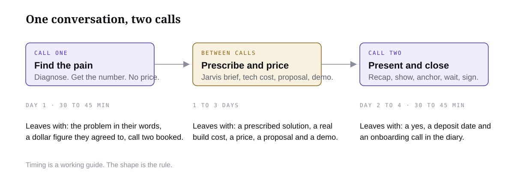
The whole conversation, start to finish. Each call has one job.
Call one is diagnosis. I find the pain, I put a dollar figure on it, and I get them to agree to that figure out loud. No pitch, no demo, no price. Call two is the prescription. I present what I would build, tied to what they told me, show them a demo, anchor the price against the number they already agreed to, say my number, and stop talking. In between, Jarvis and I build the proposal.
The doctor frame
Think about how a specialist runs an appointment. You booked in because something hurts. The doctor does not open with gratitude that you turned up, and they do not quote a surgery fee before they have examined you. They ask what is wrong, how long it has been going on, what you have tried, how it affects your life. Then they go away, look at the results, and come back with a plan.
That is the frame. They have come to you for the solution. You are there to diagnose their business, understand the problem, then prescribe. If you believe you are lucky to be on the call, every question you ask will sound like permission seeking and every number you say will sound like an apology. If you believe you are the doctor, the same words land completely differently.
One call or two?
Your offer decides this, so decide it before your first call.
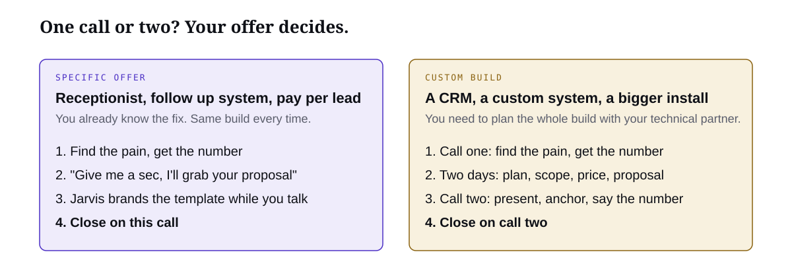
Specific offer: close on the call. Custom build: two calls, because you need to go and plan it.
If your offer is specific, a receptionist, a follow up system, a pay per lead campaign, you do not need two calls. You already know what you are going to build because it is the same thing every time. Run the diagnosis, get the number, then say "give me a sec, I'll grab your proposal and we can go through it". Jarvis takes your template proposal and brands it to them while you are still talking. Walk them through it, anchor, say the number, close. One call.
If your offer is custom, a CRM, a bespoke system, anything you have to design for that business, you need two calls. Not as a tactic. Because you genuinely need to go back and plan the whole build with your technical partner before you can tell them what it costs. That is also the reason you give them for booking call two, and it is true, so it lands.
If you are new, start with a specific offer. The calls are shorter, the proposal is a template, and you get reps fast. Custom sells for more and takes longer to learn. Graduate to it.
Why no price on call one
Your price is a fraction of what the problem costs them. Until they have told you what it costs, any number you say is a guess, and a guess gets compared to other guesses. So when they ask on call one, and some will, this is what I say.
I could throw a number at you now, but it would be a guess, and you deserve better than a guess. Let me go away, map exactly what this would look like for you, get the real cost of building it, and come back with a proper proposal. If the numbers make sense we move. If they don't, you've lost forty minutes and gained a free audit.
What happens between the calls
This is where Jarvis earns its keep. The gap is one to three days. In that time you produce four things.
What
Who makes it
Lesson
The solution: what gets installed, in what order, what it fixes
You, with Jarvis
Prescribe the Solution
A real build cost, from your technical partner or your own scope
Partner, or you with Jarvis
Module 7
A price, set as a fraction of the problem cost, running costs shown
You
Prescribe the Solution
The proposal and a demo built for them
Jarvis, checked by you
The Proposal and Demo Generator
The notes you take out of call one are the raw material for all four. The better your notes, the better the proposal.
What call two is for
Call two is the prescription. You recap what they told you, in their words, and collect the yeses. You show what you found and what you would install. You walk the demo. Then you anchor the price against the problem cost, say your number, and go quiet. Everything in call two is set up by call one. If call one was weak, call two is a pitch. If call one was strong, call two is a formality.
Next lesson is the call one script, word for word. Read it before your next call.
Module 6 · Sales · Lesson 2 of 7
Call One: Find the Pain
The whole job of call one is to understand their business well enough to put a number on what is broken, and hear them agree to it. Here is the script.
By the end you will have
the full call one script, in order, and a dollar figure from your next real call.
This is the call that decides the deal. Not because you close here, you usually do not, but because everything you say later is built from what you learn here. Run it well and the second call writes itself. Run it badly and no script on earth saves it.
Below is the whole call, in the order I run it, with the words I say. Read it twice, then keep it open next to you for your first ten calls. After ten you will not need it.
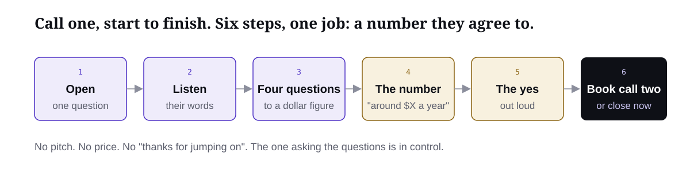
Six steps. The only output that matters is step five: a number they agreed to out loud.
Before you say a word
You are the prize. They booked into your calendar because something you said hit a pain and they want it fixed. So you do not open with "thank you for jumping on today". That line makes them the chooser and you the applicant. Warm, curious, unhurried. Never grateful. And remember the rule that runs the whole call: the one asking the questions is in control. You ask. They talk.
Step 1. The open
Thirty seconds of human, then straight into the one question. No agenda, no company story.
Hey [name], good to meet you properly. How's the week going?
[Let them answer. One line back. Then:]
So [name], tell me, was there anything specific you're having problems with currently? Walk me through it.
Before you move on: you know whether they came for one fix or for direction. Most people who booked off an ad or a message name the exact pain you called out. Some say "we know we need to do something with AI, we just don't know where". Both are fine. Same script, you just listen longer on the second one.
Step 2. Let them tell the story
Get them explaining the problem in their own words, as things that happened, not adjectives. Do not fix anything yet. The moment you say "we can automate that" they stop talking, and what they say next is what you sell them with.
Okay, so when you say [their words], what does that actually look like day to day? Take me through the last time it happened.
And who's dealing with it when it happens?
How long has it been like that?
What have you tried so far to fix it?
Before you move on: you can describe the problem as a sequence of events, in their words.
If they came for direction rather than one fix, and the business is small enough that one person can describe it, add this. Skip it for a bigger company, the owner of a forty person business will not walk you through everyone's week and it makes you sound junior.
Before I suggest anything I want to understand how the business actually runs. Where do customers come from, and what happens from the moment one gets in touch to the moment they've paid? Where does it get messy?
Step 3. What they have now
Something is already in the gap. A person, a system, a spreadsheet, a receptionist who goes home at five. The current fix is always part of the cost.
And right now, what's handling that? Is it a person, a system, a bit of both?
What does that cost you? Not just the subscription, the whole thing: the person, the time, the stuff that slips through.
Before you move on: you know the tools, the people, the workarounds, and roughly what each costs.
Step 4. The four questions that find the number
This is the core of the call. Everything before it was warming up. Four questions, in this order, turn a complaint into a dollar figure they will agree to.
What is actually happening? The problem as events.
What are you doing about it right now? Tools, people, workarounds, nothing.
Who does that work? Names, roles, hours. This is where wages enter.
What is it costing you? Wages, software, lost jobs. Everything converts to dollars.
Let me make sure I've got this. So right now [restate the problem as events]. To deal with it you've got [the current fix], and [person] spends roughly [hours] a week on it. Is that about right?
Okay. So let's put a number on it. [Person] is costing you what, roughly, a year? And the software? And how many jobs or customers a month do you reckon slip because of this? What's one of those worth?
Before you move on: you have the parts: wages, software, lost jobs, each with a rough number.
Step 5. Say the number and get the yes
Add it up out loud and ask them if it is right. You want a figure they own, not one you sold them. If they push back, lower it until they agree. A conservative number they said yes to beats an impressive number they rolled their eyes at.
So if I add that up, this is costing you somewhere around [number] a year. Does that sound right to you, or am I off?
[If they say it's high: Fair enough, what would you put it at? Then use their number.]
Before you move on: they said yes to a number, out loud. If you do not have this, you do not have a call two. Go back to step four.
Everything comes back to money. If it is time, it is wages. If it is efficiency, it is money better spent. If it is missed calls, each one was a job. Once you know the problem costs them $150k a year, charging 5 to 10 percent of that is a no brainer, and that maths is the next two lessons.
Step 6. Book call two, or close now
If your offer is specific and you already know what you are going to build, this is where you say "give me a sec, I'll grab your proposal and we can go through it", and you jump to the call two lesson. If it is a custom build, you book call two. Give them the real reason: you need to go and plan it properly with your technical partner. Get it in the diary before you hang up.
Okay [name], this has been really useful. Here's what I'm going to do. I need to go back and plan out exactly what fixing this would look like in your business, with my technical partner, with the real numbers. Not a generic deck, the actual thing we'd build for you.
Give me two days. Does Thursday at ten work to walk through it? Twenty minutes.
[Book it on the call. Send the invite while they are still on the line.]
One last thing. Is there anyone else who'd need to be in that conversation if we end up working together? Good, bring them.
Before you hang up: call two is in both diaries and the decision makers are named. That last question is what stops "I need to check with my partner" killing the deal next week.
Straight after the call
Dump everything into Jarvis while it is fresh. It structures the notes that feed the next lesson.
I just finished a discovery call. Here are my raw notes and the transcript if I have one: [paste]. Build me a call one brief with these sections: 1. The business in one paragraph. 2. The problem as a sequence of events, in their words where possible. 3. What they have now and what it costs. 4. Who does the work and what they cost. 5. The number they agreed to, and how we got there. 6. Anything they said that sounded like a buying signal or an objection. 7. Questions I should have asked and did not. Keep their exact phrases in quotes. Do not suggest a solution yet.
If section 5 has a number in it, you ran the call properly.
Module 6 · Sales · Lesson 3 of 7
Prescribe the Solution
They gave you a problem and a number. Now you design the thing that fixes it, check it can be built, and price it against the problem, not the work.
By the end you will have
a prescribed solution for one real prospect: what gets installed, in what order, what it costs to build, and what it is worth.
Most people in this space price the work. Hours, tokens, licences, a margin on top. Then they wonder why a $4,000 quote gets ghosted and a $22,000 one gets signed in the same week. I price the problem. This lesson shows you how, using one of my real deals.
Price the problem, not the work
Know exactly what the problem is costing them and charge against that. Call one gave you the number. Now you use it.
If a problem is costing them $2k a year and you are trying to charge $20k to solve it, that is a huge disconnect, and no amount of charm fixes it. Your pricing is based on their problem, within reason. Technically you could charge $50k for a new website if the problem is costing them $5 million a year, assuming the solution is worthy. To them it is worth it. If that $50k genuinely solves the problem, financially it makes sense. It is an investment in solving the problem, and at that point you are not pitching, you are solving.
The Australian government spent $96 million on a website. Yes, government contracts are bloated. Yes, it is an extreme example. But because they had the budget and the problem cost them a certain amount, they could foresee spending $4.6 million on a website, let alone $96 million. Price follows problem size. It always has.
The working range
I charge 5 to 10 percent of the problem's annual cost for the build, and I show the running costs separately and honestly. Anchor at 10, land at 5. How to say it out loud is in the call two lesson. For now, the maths.
Problem cost per year (agreed on call one)
10 percent
5 percent
$60k
$6k
$3k
$150k
$15k
$7.5k
$300k
$30k
$15k
$600k
$60k
$30k
Those rows are illustrative. The point is the shape: the smaller the problem, the smaller the deal, and below a certain size it is not worth a custom build at all. That is why I had you look for problems that cost real money back in the offer module.
The $22,000 AI CRM
A high ticket construction company. Their pain was four things, all found on call one.
1. Platform limitations. The CRM they used was rigid. Every change meant going through the platform's support, submitting tickets and asking for new manual things to be added. It felt like a bolt on to the business, not a custom solution.
2. The cost. $13k a year in platform costs alone. Their previous CRM also charged per job to send invoices and receive payments, which meant $100 per new customer account.
3. Manual tasks done by one employee which could 100 percent be removed. She only worked three days a week but cost them over $65k a year.
4. Job efficiency, start to completion. Each job took several weeks. By introducing a few automations into the CRM, they could add an extra four jobs a week with no extra staff.
Their problem was costing them around $110k a year in platform fees, per job charges and wages, plus the extra jobs they could not take with their current stack, probably another $500k a year in revenue, not profit. So when the price was $22k, it was an easy sell.
Look at the structure of that, because it is the structure of every good deal. Four distinct pains, each with a number. A cost side (platform, per account fees, wages) and a revenue side (jobs they could not take). A price that is a small fraction of the cost side alone, before you even mention the upside. The client is not deciding whether to spend $22k. They are deciding whether to keep spending $110k.
What a prescribed solution looks like
A prescription is not a feature list. It is three things, in order.
What gets installed. The system, named plainly. "A custom CRM with automated invoicing and job scheduling", not "an AI powered operations layer".
In what order. What goes live first, what follows, what waits. First thing live should hit the biggest pain, so they feel the win early.
What each piece is worth. Map each part of the build back to one of the pains and its number. If a piece does not map to a pain, cut it. It is cost with no story.
The proposal, next lesson, wraps that in their words and a demo.
Get the real build cost before you price
The gap between the calls is what lets you take the brief to your technical partner and ask what they will charge to build it fully. You mark up from there. If you are building it yourself with Jarvis (Module 7), you scope it the same way: what has to be built, what it connects to, how long, what it costs to run.
Two inputs set your price. The problem cost sets what they will pay. The build cost sets whether you can deliver it profitably. If 5 percent of the problem does not clear your build cost with margin, either the problem is too small or the solution is too big. Fix one before call two.
The proposal must show the running costs
Your proposal has to show the real monthly cost of running the thing: the AI usage, the subscriptions, whatever else it needs. Hiding it feels clever until month two, when their card gets charged and they call you. Put it on the page next to the build price and it becomes part of the story: "you were paying $13k a year to a platform that would not change. This runs for a fraction of that and it is yours."
Let Jarvis do the first draft
Paste the brief from the last lesson. Jarvis gives you the solution, the scoping request for your technical partner, and a first pass at price.
Here is my call one brief: [paste]. Do three things. First, write a prescribed solution: what we would install, in what order, and which of their pains each part fixes, with the dollar figure from the brief next to it. Plain language, no AI jargon. Second, write a scoping request I can send to a developer: the systems involved, the integrations needed, the data that moves, what the client has to provide, and the questions a builder would need answered before quoting. Third, using the agreed problem cost of [number] a year, show me 10 percent and 5 percent, and list the likely monthly running costs (platforms, AI usage, hosting) as separate lines. Flag anything in the brief that is an assumption rather than something the client said.
Send the scoping request to your technical partner the same day. Call two is already booked, so do not sit on it.
Module 6 · Sales · Lesson 4 of 7
The Proposal and Demo Generator
This is the leverage. Call one notes in, proposal and a demo built for them out, same day. For a specific offer, Jarvis brands your template while you are still on the call.
By the end you will have
a finished proposal and a demo for one named prospect, ready to present.
A proposal is not a document you send. It is the thing you walk through on call two. Its only job is to make the buyer think: "you understand our problem, I can see what changes, I understand what we get and how we start." Everything that does not serve that sentence is cut.
Most agency proposals are twenty pages about the agency. Mine is six short sections about them. Jarvis builds it from your call one brief and your prescription. You read it as the buyer, fix what is wrong, and present.
Specific offer? Use a template and brand it on the call
If you sell a specific offer, the proposal is the same six sections every time with their name, their numbers and their words dropped in. Build the template once. Then on the call, when you have the number, you say "give me a sec, I'll grab your proposal", paste your call notes into Jarvis, and it fills the template while you keep talking. Thirty seconds later you are sharing your screen and walking them through a proposal with their business on it. That is the whole one call close.
Here is my proposal template [paste] and the notes from the call I am on right now [paste]. Fill the template for this business: their name, the problem in their words, the number they agreed to and its parts, and the price as 5 percent of that number rounded to a clean figure. Keep every section short. Do not change the structure. Give me the finished proposal only.
For a custom build, the rest of this lesson is how the proposal gets built properly between the calls.
What a proposal must contain
Six sections, in this order. Combine them for a simple service. Never skip the ones about scope and money.
Section
What goes in it
Where it comes from
1. What we are fixing
The problem in their words. The incident they described, not a generic "businesses lose money to inefficiency". Who deals with it and why it matters.
Call one brief, sections 2 and 3
2. The number
What it is costing them a year, as they agreed. The parts shown separately: wages, platforms, lost jobs. Revenue kept distinct from cost.
Call one brief, section 5
3. What changes
A simple before and after of the workflow. What they receive, what it plugs into, what humans still approve. What this does that their current tool does not.
The prescription
4. See one job go through it
The demo. One real request going through the new system, including one exception. Labelled honestly as illustrative or connected.
This lesson
5. What we build and how we launch
Three to five concrete deliverables. What is not included. What they must provide. Milestones: access, build, test, launch, handover. Running costs, in plain lines.
The prescription plus the build scope
6. The decision
The price, the payment shape, the support, and one specific next step. No fake urgency, no invented discount.
Call Two lesson
Illustrative versus connected demos
There are two honest kinds of demo and one dishonest kind. Know which you are showing and say it on the page.
Illustrative. A mock up or a clickable walk through with made up data, showing the shape of the workflow. Fast to build with Jarvis. Completely fine for call two as long as it is labelled, quietly, as a mock up.
Connected. A working slice that actually talks to a real tool, using sandbox or test records. Slower, more convincing, worth it for bigger deals or when they have been burned by vapourware before.
The dishonest kind. An animation that implies the integration is built and live when it is not. Do not. It wins the call and loses the client at onboarding.
Keep the demo to three to five visible steps and about a minute of talking. Show the screen or output they will actually use, not a dashboard full of fictional revenue. Always include one exception, a missing field, a duplicate, an uncertain match, and show a person resolving it. Buyers trust a system that admits it needs them for the edge cases far more than one that claims to handle everything.
Pick the demo pattern that matches the service
If the service is
Show this sequence
Order intake, quoting, document processing
An inbound email or document, the structured draft beside it, one missing field, a person approves, the output lands in their system
Lead response, follow up, reactivation
An inbound message, the reply, the handoff to a person, an opt out stopping the sequence, the record in the CRM
An operational CRM or custom app
One job moving from request to assigned to done, in one record, with who changed the status and where an exception was logged
Internal knowledge or support triage
One practical question, the suggested answer, the source it came from, and the path to a human when there is no evidence
Build the proposal
Build a client proposal from these two documents: my call one brief [paste] and my prescribed solution with pricing [paste]. Use exactly six sections: 1. What we are fixing, in the client's own words from the brief. 2. The number: their agreed annual cost of the problem, broken into its parts, with revenue upside kept separate from cost. 3. What changes: a before and after of the workflow in plain language, what they receive, what it plugs into, and what a human still approves. 4. See one job go through it: write a three to five step demo walkthrough using the [pattern] pattern, with one realistic exception, and label it clearly as an illustrative mock up. 5. What we build and how we launch: three to five deliverables, what is excluded, what the client must provide, milestones, and monthly running costs as separate lines. 6. The decision: the build price of [price], the payment shape of [shape], what support is included, and one specific next step. Write it for a business owner, not a developer. No AI jargon. Nothing about us until section 5. Do not add testimonials, urgency or discounts. Flag any number you had to assume.
Build the demo
Using the demo walkthrough from section 4 of the proposal, build me a simple clickable mock up as a single HTML page: one screen per step, a next button, realistic sample data for a [their industry] business, one exception step where a person has to resolve a missing or uncertain field, and a small label on every screen that says Illustrative mock up. Clean, calm design, no fake revenue dashboards. Make it work when I share my screen and step through it manually.
Review it as the buyer before you present
Open the rendered proposal and the demo. Read them cold, as the owner you spoke to, and check four things.
Can I explain the problem, the change and what I am buying after a thirty second scan?
Do the numbers match what I said on the call? Did anything get rounded up to make the story nicer?
Does it answer the obvious objection: why this instead of the software and staff I already have?
Does the demo work, including the back button and the exception, on the screen I will actually share?
Then remove anything that is about you rather than them. Previous client names, logos, a company history, a list of every agent you could build. It all comes out. A proposal with one recommendation closes. A proposal with options gets "we'll think about it".
Rehearse the demo twice out loud and time it. Over two minutes, cut steps.
Module 6 · Sales · Lesson 5 of 7
Call Two: Present and Close
Everything on this call was set up by the last one. Present the proposal properly, speak like the doctor, say the number, then stop talking.
By the end you will have
the full call two script, how to present and how to speak, and the anchor you say word for word.
Call two is where the money is, and it is the easier of the two calls, provided call one did its job. You are not persuading anyone. You are presenting a proposal that fixes a problem they already told you costs them real money, at a fraction of that money. This lesson is two things: how to present the proposal properly, and how to speak while you do it. Get both right and a no means choosing to keep the problem.
Between the calls, you and Jarvis draft the proposal from your call one notes. If you are in the group or private tier, bring the recording and the draft to the weekly session so I or your technical CSM can check it before you present. If you are closing a specific offer on one call, the same four moves below apply, you just run them straight after the number.
How to present the proposal
Four moves, in order. Recap their words. Walk the plan tied to their problem. Show the demo. Then the number. Never skip the recap, and never say a price before the demo.
1. Recap their words and collect the yeses
Play their own words back to them. Their problem, their number. Every sentence ends in a question they can only answer yes to. Each yes puts them in a more agreeable state for the rest of the call.
[Name], good to see you again. Before I show you anything, I want to make sure I've got this right, because if I've misunderstood something the rest of this is pointless.
Last time you told me [the problem as events, their phrase]. Is that still the picture?
And right now that's being handled by [current fix], with [person] spending about [hours] a week on it. Right?
And when we added it up, between [wages], [platform] and [lost jobs], we landed on this costing you around [number] a year. Is that still a fair number?
Okay. So this current system is costing you [number] a year. Good. Let me show you what I'd do about it.
If they revise the number down, let them and use theirs. A number they own beats a number they tolerate.
2. Walk the plan, tied to their problem
Walk sections one to three of the proposal. Problem, number, what changes. Slowly. Pause after each and ask if it matches how they see it. Every feature you mention gets attached to a sentence they said on call one. If you cannot attach it, leave it out.
So here's what I found. The thing underneath [the problem] is actually [root cause in plain words]. That's why [the current fix] keeps not working: it's built for [what it was built for], not for how you actually run jobs.
What I'd put in is [the system, named plainly]. Here's how a [job, lead, order] moves through it now, and here's how it moves through it after. The difference is [the two or three things that change]. [Person] stops doing [the manual work] and starts doing [the valuable thing].
Does that match how you'd want it to work? Anything in there that wouldn't fit?
3. Show the demo
Share your screen and step through it. Three to five steps, about a minute. Narrate what the business is doing, not what the software is doing. Make a point of the exception step, because that is where they see their own person using it.
This is one job going through it. Here's the request coming in. Here's the system doing [the first thing] on its own. Now here's one where it's not sure, see, the [field] is missing, so it flags it and [person] takes ten seconds to fix it instead of an hour to chase it. And here's where it lands in [their system].
This is a mock up, built on your workflow, so you can see the shape. The real one plugs into [their tools].
Can you see [person] using that?
4. Anchor, then say the number
You already have a yes on the problem cost from the recap. Now you ladder down from it, collecting a yes at each rung, and the last rung is your price. Then you go silent.
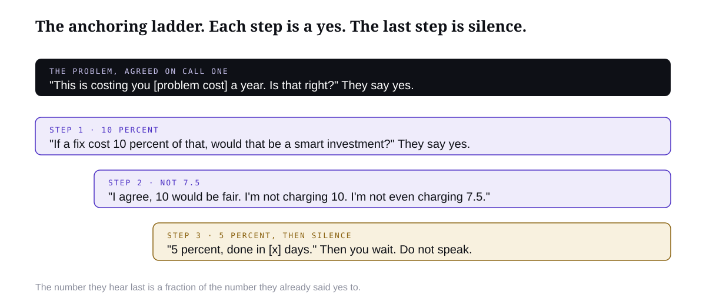
Each rung is a yes. The price arrives as a fraction of a number they already agreed to.
So [name], let's say I came to you with a solution to your [problem cost] a year problem, and let's say that solution only cost 10 percent of the total problem's cost. As a business owner, does that sound like a viable investment? You pay 10 percent to solve 100 percent of the problem and keep over [90 percent of the number] a year?
[Wait for the yes. If they hedge: it's only a thought exercise, work with me here.]
Well, I agree, 10 percent would be a fair charge to solve this. But I'm not charging you 10 percent. I'm not even charging you 7.5 percent. I'm charging you 5 percent of the total problem's cost to solve it for you, so [price], and it'll be done in [x] days.
[Stop. Do not speak. Let the silence sit until they fill it.]
If they go quiet at the 10 percent question, say it is a thought exercise and ask again. The yes still comes. The same move in dollars, the way I ran it on a $150k problem:
So this is costing you about $150k a year. If I could remove that for $50k, would that be a smart business investment? Take $150k of expense off the books for $50k?
[Yeah, I guess.]
Good. I'm not going to charge you $50k. It's $5k to set the whole thing up, and $500 a month for maintenance and any changes after that.
[Silence.]
Anchored at fifty, five is a no brainer. The number they hear last is always a fraction of a number they already agreed to.
How to speak
The structure above fails in the mouth of someone who rushes it. Three habits.
Slow down. Slower than feels natural. Fast sounds like getting it over with before they object. Slow sounds like someone who has done this before.
Silence after the number. Say the price, then stop. It will feel like an hour. It is usually five seconds. Whoever speaks first after the price is the one who moves, and it is not you.
Their words, not yours. If they called it "the office being flat out", you call it that too. The moment you translate their pain into your language, it becomes your idea instead of their problem.
The one asking the questions is in control
The person asking the questions is the person running the call. When you are presenting, it feels like you should be talking. You should not. Every move above is built around a question because the question hands them the next step and makes them say it. Three minutes into a monologue, stop and ask something. If they start interrogating you, answer in two sentences and ask a question back. You are the doctor. Doctors ask.
The same rule covers reframing. When a prospect frames the price as a cost, you do not argue. You ask a question that puts it back next to the problem: "Compared to the [number] a year it's costing you now, where does [price] sit?"
When they speak again, it is a yes, a question, or an objection. A yes goes straight to logistics. A question gets answered, then you ask again. An objection goes to the next lesson. Either way you are not chasing. You are scheduling the treatment.
[On a yes:] Great. Here's how it works from here. I'll send the agreement tonight, the deposit of [amount] secures your build slot, and we'll do a one hour onboarding call on [day] where we collect access and the sample data. You'll see the first piece live by [date]. Running costs are the lines on page five, so no surprises on your card. Shall I send the agreement to this email?
[On a question:] Good question. [Answer it in two sentences.] So, with that cleared up, does the plan make sense to you?
[On hesitation with no stated reason:] What's the part you're sitting on? Is it the money, the timing, or whether this actually works in your business?
That last line sorts every vague hesitation into one of three objections you already have answers for.
Keep payment simple and the same every time: a deposit to start, the balance at launch, running costs as their own monthly line. Send the agreement the same day while the call is warm.
Turn sections 5 and 6 of this proposal [paste] into a one page plain language service agreement for a [country] small business: deliverables, exclusions, what the client provides and when, milestones with dates, [price] paid as [deposit] on signing and the balance at launch, monthly running costs as separate lines, support included for [period], how either side ends it. Flag anything a lawyer should check.
The call two card
Move
Say
You need before moving on
Recap
"Last time you told me [their words]. Still the picture?" "This is costing you around [number]. Fair?"
Two or three yeses, including the number
Plan
"The thing underneath this is [root cause]. What I'd put in is [system]."
They agree the fix fits
Demo
"This is one job going through it. Here's the one it flags for [person]."
They can see their own person using it
Number
"If it cost 10 percent of that, smart investment?" "Not 10. Not 7.5. 5. Done in [x] days."
Silence. Let them fill it.
Close
"Deposit secures the slot, onboarding on [day], first piece live by [date]. Send the agreement?"
A yes, a deposit date, an onboarding call
Rehearse the anchor out loud with your real numbers before the call, and practise not filling the silence. It is the hardest five seconds in sales and it is where the money is.
Module 6 · Sales · Lesson 6 of 7
Objections
An objection is not a no. It is the last piece of pain you have not found yet. Identify it, then prescribe.
By the end you will have
the ten objections you will actually hear, the frame behind each one, and the words to answer it.
Nobody argues a prospect into a deal. If you find yourself arguing on call two, you have left the doctor frame and become a salesperson, and they can feel it. Every objection below is handled the same way: stay calm, find the real concern underneath it, and prescribe. You already know how to do that. It is call one, in miniature.
Before the list, the one line that handles most of them. When someone hesitates without saying why, do not guess. Sort it.
What's the part you're sitting on? Is it the money, the timing, or whether this actually works in your business?
Three buckets. Every objection below lives in one of them.
1. "It's too expensive"
The frame. Expensive compared to what? If the anchor landed, the price is 5 percent of a number they agreed to. If they still say expensive, either the number was not really theirs, or the problem is not actually a priority. Go back to the number, not the price.
Fair enough. Let me check something, because I'd rather you say no than buy something that doesn't make sense. We agreed this is costing you around [number] a year, right? So the question isn't really whether [price] is a lot. It's whether you'd rather keep paying [number] a year. If the number's wrong, tell me, and we'll re-look at the whole thing.
2. "I need to think about it"
The frame. Nobody thinks about it. They either have an unspoken objection or no urgency. Respectfully refuse the vague version and sort it.
Of course. Can I ask, what specifically do you want to think through? Because if it's something I can answer now, I'd rather do that than have you sit with a question for a week. Is it the money, the timing, or whether it'll work for you?
3. "I need to check with my partner"
The frame. If you asked on call one who else needed to be in the room, this rarely happens. If it does, do not let the partner hear a second hand version of the pitch. Get them on a call.
Makes sense, it's their business too. The thing is, if you explain it to them you'll get the half of it you remember, and they'll ask questions you can't answer, and it'll die in the kitchen. Let's do fifteen minutes with both of you, I'll run the short version. When are they free?
4. "We tried AI and it didn't work"
The frame. This is gold. Ask what they tried. It will almost always be a generic tool bolted on with no workflow design, which is exactly what you are not selling. Their bad experience becomes your proof.
What did you try? [Listen.] Yeah, that's the pattern. Someone plugged a chatbot in and hoped. What we mapped on the last call is different, it's built around how [person] actually runs a job, and you saw the step where it hands the edge cases back to a human instead of guessing. That's the bit the last one didn't have.
5. "Just send me the proposal"
The frame. A proposal read alone, without you, is a price list. Never send it as a substitute for call two. Send it as a follow up to call two.
I will, and I'll send it today. But I'll be honest, a proposal on its own is just a document with a number on it, and you'll skip straight to the number. Give me twenty minutes to walk you through it so the number makes sense, then you'll have it in writing to go over in your own time.
6. "Not right now, maybe next quarter"
The frame. Timing objections are cost of delay objections. You have the annual number. Divide it.
Totally get it. Just so we're both looking at the same thing: at [number] a year, next quarter costs you about [number divided by four] in the meantime, and that's before the jobs you can't take. If the timing's genuinely wrong I'll come back when it's right. But if it's just that it's never a good time, this is roughly what waiting costs.
7. "What if it breaks?"
The frame. This is a fulfilment question wearing an objection costume. Answer it with the support line in the proposal and the exception step they saw in the demo.
Good question, and it's why the support line is on page five. For [period] after launch I'm the one who fixes it, included. After that it's [monthly retainer], and you saw in the demo it's built to hand things back to [person] rather than guess, so when something's off you know the same minute, not the next month.
8. "Can you guarantee it'll work?"
The frame. Do not invent a guarantee you have not agreed with yourself. Guarantee the thing you control: the build, the launch, the support. Not their revenue.
I can't guarantee your revenue, and anyone who says they can is lying to you. What I guarantee is this: it'll do the things on page five, it'll be live by [date], and if it doesn't do what we agreed, I keep working on it at no extra fee until it does. That's a promise about my work, which is the only honest promise I can make.
9. "We could build this ourselves"
The frame. Maybe they could. Agree, then ask about the cost of the attempt. You are selling the outcome by a date, not the code.
You probably could, honestly, the tools are out there. The question is whether you want [person] learning to build software for the next three months instead of doing their job, and what it costs you if version one doesn't quite work. You're not paying me for the code. You're paying to have it running by [date], done by someone who's done it before, so you can get back to [their actual business].
10. "We're too small for this"
The frame. Sometimes true. If the problem cost is genuinely small, say so and walk away with grace; that honesty brings referrals. If the number is real, it is not about size.
Maybe. Let's look at it. The problem's costing you [number] a year. That's not a big company problem or a small company problem, it's just [number] leaving the business. If it were [much smaller number] I'd tell you not to bother and I'd mean it. At [number], it's worth fixing.
Let Jarvis predict the three you will hear
Here is my proposal [paste] and my call one brief [paste]. Based on what this specific client said, which three objections from this list are they most likely to raise on call two: too expensive, need to think, check with partner, tried AI before, send me the proposal, not right now, what if it breaks, guarantee, build it ourselves, too small? For each, quote the thing they said that makes you think so, and write a two sentence answer in my voice using their own numbers and words.
Say the three that scare you most out loud until they sound like you, not like a script.
Module 6 · Sales · Lesson 7 of 7
Get Your Calls Reviewed
You will not get good at this alone in a room. Record every call, review it with Jarvis the same day, and bring the hard ones to me.
By the end you will have
a recorded call, a self review from Jarvis, and a slot in the weekly strategy session to walk it through.
Sales is a skill you build by watching yourself do it badly, often, with someone who can tell you why. Every week you get a group strategy session with me or your technical CSM. The people who get good fast turn up with a recording. The ones who stay stuck turn up with a story about a recording.
The loop is simple: record, self review with Jarvis, submit, get reviewed, fix one thing, repeat.
Record every call
Every call one and every call two, from the first one you ever do. Tell them at the start, lightly. Nobody minds, and the ones who do mind are telling you something.
Quick one before we start, I record these so I can go back over the details properly rather than scribbling while you talk. All good?
Use whatever your meeting tool does natively, or a simple recorder that gives you a transcript. The transcript is what matters, because Jarvis reads transcripts, and so do I. Save it to the prospect's record in your CRM the same day.
Self review with Jarvis before you submit
Run every call through this prompt within an hour of hanging up. You will learn more from your own transcript in ten minutes than from a week of thinking about it. Submit the output with the recording so the group review starts from your reflection, not from zero.
Here is the transcript of a [call one / call two] I ran today: [paste]. Review it against the course structure. For call one: did I avoid opening with thanks, did I ask the opening question, which branch was it, did I ask the four questions, did I get a dollar figure, did they agree to it out loud, did I pitch or price when I should not have, and did I book call two with the decision makers named? For call two: did I recap in their words and collect yeses, did I present the root cause before the system, did I walk the demo with an exception, did I run the anchoring ladder in order, did I stay silent after the price, and how did I handle the objection? Score each item yes or no with the timestamp and the exact words. Then give me the single biggest thing to change on the next call, and the one thing I did well. Be direct. Do not be kind for the sake of it.
The review rubric
This is what I am listening for when I review a call. Score yourself against it first. Four out of five on every row and you do not need me any more.
Area
What good sounds like
What it usually sounds like instead
Frame
Calm, curious, unhurried. Never thanks them for showing up. Asks, then listens.
Grateful opening, nervous energy, talks over the answers
Diagnosis
Gets the problem as events, in their words. Finds who does the work and what they cost.
Accepts an adjective ("it's messy") and moves on
The number
A dollar figure they agreed to out loud, built from parts they supplied.
No number, or a number the seller suggested and the buyer tolerated
Discipline
No pitch and no price on call one. Books call two with decision makers named.
Solutions blurted at the first pain. Price guessed. "I'll send you something"
Call two structure
Recap and yeses, root cause, system, demo with an exception, ladder, silence.
Straight to the demo, price mumbled, fills the silence
Objections
Sorts it (money, timing, fit), finds the real concern, prescribes.
Argues, discounts, or agrees to "think about it"
Next step
A deposit date and an onboarding call, or a reason and a booked follow up.
"Let me know what you think"
What to submit, and when
Each week, before the session, submit one call. Not your best one. The one you are least sure about. Three things in the submission.
The recording or transcript, with the prospect's name removed if you prefer.
Jarvis's self review, unedited.
One sentence: the moment in the call you want us to look at, with the timestamp.
A review takes ten to fifteen minutes of the session. I listen to the part you flagged, go back to where it actually went sideways (it is usually earlier than you think), and give you one change for the next call. One. You will want five. One is what people actually do.
The weekly group strategy session
It runs weekly, with me or your technical CSM, and it is not a lecture. It is where I walk new people through finding a niche, finding the offer, building the demo and running the calls, with real work on screen. Call reviews are one part of it. Offer reviews, scoping questions and pipeline problems are the rest. Come with something. The session is only as good as what you bring to it.
If you are on the private tier you also get me between sessions. The reviews are the same standard either way.
Keep a running log
Every reviewed call produces one change. Keep them in Jarvis so it can hold you to them.
Add this to my sales log: on [date] I ran a [call one / call two] with [prospect]. The review said the one thing to change is [the change]. Before each of my next three calls, remind me of this change and the last two before it, and after each call ask me whether I did it.
Record your next call, run the self review within the hour, and send it in with one timestamp. Then go and book another call, because the review is only useful if there is a next call to use it on.
Module 7 · Fulfilment · Lesson 1 of 7
Two Ways To Deliver
You have money in the bank and a promise to keep. The first decision is who builds it.
By the end you will have
A rule you can apply to any signed deal: hand the build to a developer, or build it yourself with Jarvis.
Call two is done. The deposit has landed. Now you owe a business owner a working system, and how you deliver it decides whether this deal makes you money or eats the next three weeks of your life. There are two ways to deliver. I want you to pick one before you touch a single build.
The two paths
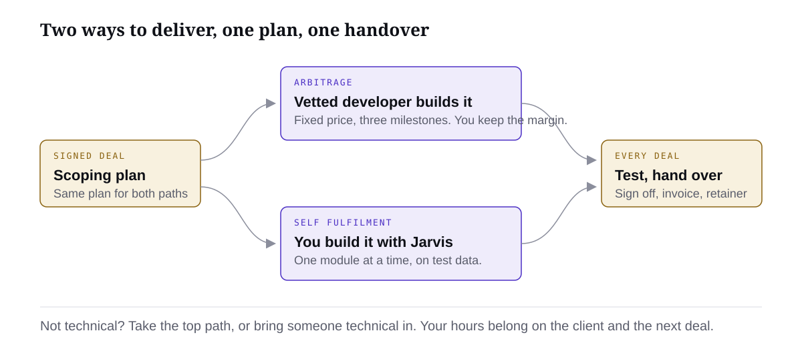
Both paths start with the same build plan and end at the same handover. The only difference is who does the building in the middle.
Arbitrage. You sold it. A developer builds it. You scope the job properly, hand them a build plan, pay them a fixed price in milestones, and keep the difference between what the client paid you and what the developer cost. Your job is the client, the scope and the money. Their job is the build.
Self fulfilment. You sold it and you build it, with Jarvis doing most of the actual work. Same build plan, but instead of handing it to a person you hand it to Jarvis one piece at a time, test it, and deliver it yourself. Higher margin, more of your hours, and it only works if you are comfortable in the tools.
My honest recommendation
If you are not technical, bring someone technical in to finish the job. Every time. Do the creative side yourself if you want to: the workflow design, the client conversations, the demo, the way it feels to use. Then hand the build to someone who already knows how to wire it, instead of learning the whole thing from scratch while a paying client waits.
This is not a comment on your ability. It is about where your hours are worth the most. You just proved you can find a business owner, diagnose a real problem and get paid five figures to fix it. That skill is rare and it is the one that scales. Debugging an integration at eleven at night is not rare, and plenty of good people will do it for a fixed fee. The people who stall at this point are almost never the ones who could not sell. They are the ones who sold, then disappeared into a build they were not ready for.
I keep a list of developers we have already vetted, and the weekly strategy session exists for exactly this. If you have signed a deal and you are not sure who should build it, bring it to the session before you start anything.
How to decide
Ask yourself three questions about the deal in front of you. Answer them honestly, not optimistically.
Question
Hand it to a developer
Build it yourself
Have I built something like this before, end to end, and had someone else use it?
No, or only a demo
Yes, in a live business
Does it need to plug into tools I have never connected? Their CRM, accounting, booking, phones.
Yes, more than one
No, or one I know
What happens to my pipeline if this build takes three times longer than I think?
Outreach stops, nothing else gets sold
I have a team or a system running outreach without me
Two or more answers in the middle column: hand it to a developer. Two or more on the right: build it with Jarvis. Split: hand it off this time and sit beside the developer, so the next one is yours.
What stays the same on both paths
The build plan comes first. Nobody builds anything, you or a developer, until the scoping skill has turned your call notes and proposal into a full build plan. That plan is the contract between what was sold and what gets built.
It is built on test data. The client's live records are never where you find out the system has a bug.
It is tested the way the client will use it before they ever see it.
Handover is a process, not a login in an email. Onboarding, training, sign off, invoice, support window.
What the margin looks like
Illustrative numbers, not a client result. You sell an intake and quoting system for $12,000 with a $400 a month running cost. Hand it off: a developer quotes $3,500 fixed, paid in three milestones. You spend about ten hours on scoping, reviews and handover. Margin on the build: $8,500. Build it yourself: no developer cost, but you spend about forty hours building and testing with Jarvis. Margin: $12,000, which works out at roughly $300 an hour of your time. Both are good deals. The only question is which one you can actually finish while your outreach keeps running.
Let Jarvis make the call with you
I have just closed a deal. Here is the proposal I presented [paste] and my call notes [paste]. Here is my honest technical background: [two or three sentences, including which tools you have actually connected before]. Using the three questions, past builds, unfamiliar integrations, and what happens to my pipeline if this runs long, tell me whether I should hand this build to a developer or build it myself with you. Answer first, then the reasoning in plain words, then the one thing that would change your answer.
Write the answer in one line at the top of the deal in your CRM, then go to the lesson for that path. Read the scoping lesson either way, because the plan is the same.
Module 7 · Fulfilment · Lesson 2 of 7
Arbitrage: Find and Vet Developers
Your job is the client and the money. Their job is the build. Getting this bench right is the whole model.
By the end you will have
Two or three vetted developers you have already paid for a test task, with rates agreed, sitting in your CRM.
Handing a build off only works if you have someone to hand it to before you need them. The worst time to find a developer is the week after a deposit lands. Build a small bench of two or three people you have already tested, so that when a deal closes, the build plan goes out the same day.
Start with my list
I keep a list of developers we have vetted. They have built the kinds of systems this course sells: intake, quoting, follow up, operational CRMs, agents on top of existing tools. Ask for it in the group or at the weekly strategy session. It is the fastest route to a first build because the vetting below has already been done once.
Do not treat it as the only route. The list is short on purpose, good people get busy, and you want at least one builder of your own so you are never waiting on someone else's calendar.
Where else to look
Upwork. The biggest pool, the easiest to post to, and escrow protects both sides. This is where most people find their first builder. Steps below.
Your own network. Anyone who has built an automation, an app or an integration for a real business. Ask who they used. A referral from someone who paid for the work is worth more than fifty profiles.
The communities around the tools. The forums and groups for whatever platform the client's system runs on. People who answer questions there for free usually build for money too.
Jarvis writes the job post
A good job post describes the client's business, the specific thing being built and the skills it needs, in that order. A bad one says "AI automation expert needed" and gets two hundred replies from people who have never shipped anything. Let Jarvis write it from your offer and the build plan, so the post is about the actual job.
Write an Upwork job post for a developer to build this system. Here is my offer [paste] and the build plan for this client [paste the plan from the scoping skill, or the proposal if the plan is not done yet]. Structure it as: one paragraph on the client's business and the problem in plain words; a short list of exactly what is being built, including every tool it has to connect to; the specific skills and tools the developer must have already used, named; what I will provide (the full build plan, test data, access); how I want to work (fixed price, three milestones, a short paid test task first, daily written updates); and two questions they must answer in their proposal that prove they read the post. Under 300 words. Do not mention the client's name. Do not use the word expert.
Posting on Upwork
Create a client account at upwork.com under your business name and verify a payment method.
Post the job. Fixed price, not hourly. Paste the post Jarvis wrote. Set the budget at the developer cost you worked out when you priced the deal, not what the client paid.
Set the two screening questions from the post. Anyone who does not answer them gets deleted without reading further.
Invite three to five profiles yourself whose past work matches. Look for completed jobs in the same tool stack, not a high hourly rate or a long skills list.
Wait 48 hours. Shortlist three. Reply to nobody else.
How I vet them
Three things predict whether a developer will deliver. None of them is their profile.
A small paid test task
Before any real work, pay each shortlisted person for one small piece of the actual job. Something you can check in an hour: connect to the test CRM and create a record, parse one sample email into fields, build one screen of the mock up. Pay for it properly. It is the cheapest insurance you will ever buy. You are watching how they handle an ambiguous instruction, whether they ask or guess, and whether what comes back works.
Past work you can see
Ask for one thing they built that a real business is using today, and a two minute recording of it working. Not a portfolio page. If they cannot show one, they have not shipped one.
How fast and how clearly they reply
Time the replies during the test task and look at what is in them. A good builder replies inside a working day, in short plain sentences, with a question when something is unclear and a screenshot when something is done. Slow, vague or defensive during a paid test will be worse during the real build.
Signal
Pass
Fail
Test task
Works, delivered when they said, one clarifying question asked
Late, guessed instead of asking, or does not run
Past work
One live system, shown working, in a similar stack
Screenshots of dashboards, no live use
Communication
Same day, plain words, shows rather than tells
Days between replies, jargon, excuses
Pricing
Fixed price per milestone, happy to do a test
Hourly only, refuses a test, wants 100% up front
Rates and the shape of the deal
You are buying a finished, working build, so pay for one. Fixed price, split into three milestones that match the plan: built on test data, tested and reviewed by you, live and handed over. Roughly a third each, released when you have seen the milestone work. Never pay everything up front, and be suspicious of anyone who asks.
What a build costs varies a lot by country, stack and scope, so do not carry a number in your head from someone else's deal. Get three quotes against the same plan and you will know the market for that job inside two days. My rule of thumb: the developer cost should sit well under half of what the client paid for the build. If it does not, the deal was priced wrong in the sales module, not here.
Keep the developer and the client apart. You are the account. Updates go through you, the developer never sees the client's price, and the client never sees the developer's quote. This is how every agency works, and it is what keeps the margin.
Post one job this week, even if you have not closed yet, framed as a paid test task around your offer's core workflow. Two names you have paid and would pay again. That is the bench.
Module 7 · Fulfilment · Lesson 3 of 7
Arbitrage: Scope, Hand Off, Keep the Margin
A bad handover is how a profitable deal turns into three weeks of unpaid project management.
By the end you will have
A full build plan from the scoping skill, handed to a developer with milestones, a budget and a date, all logged against the deal.
By the time a deal is signed you know more about this client's business than anyone who is about to build for them. You ran call one. You heard the pain in their words. Between the calls you designed the fix and priced it. Call two walked them through it and they said yes. All of that lives in notes, a proposal and your head. This lesson turns it into one document a developer can build from without a single clarifying call. That document is what protects your margin.
Why the scope is the whole job
Every expensive build problem is a scoping problem in disguise. The developer "misunderstood" because the brief said automate intake and never said what happens when the email has no phone number. The client "changed their mind" because the proposal said quoting system and they pictured something that also chased payments. The project "ran long" because nobody wrote down which of their three spreadsheets was the real one. All of it was knowable the day the deal closed. Writing it down then costs an hour. Finding it out later costs the margin.
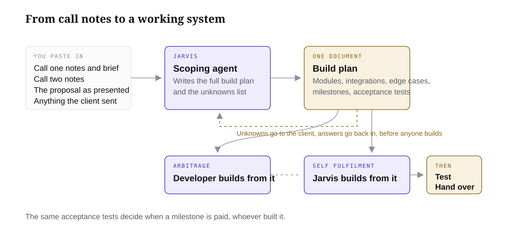
One plan, two builders. Everything you learned on the calls goes in, one build plan comes out, and it feeds the developer or Jarvis exactly the same way.
The scoping skill
The scoping skill is in the skill pack I gave you in Module 1. If you skipped that step, paste the skill file into Jarvis now and ask it to install it as a skill called jarvis-scoping-agent. Its job is simple to describe and tedious to do by hand: take everything you know about this job and write the full build plan, in a fixed shape a builder can work from.
Feed it four things, and the rawer the better:
Your call one notes or transcript, the brief you built from them, and the number you agreed.
Your call two notes, including anything they asked for, pushed back on, or added at the end.
The proposal exactly as presented, with the solution and the price.
Anything the client sent: screenshots of their current system, a spreadsheet export, the tools they use, the people who will touch it.
It gives back one document with these sections, every time, in this order.
Section
What it must contain
Problem summary
The problem in the client's words, who it lands on, what it costs. Lifted from your brief, not rewritten into jargon.
What gets built
One paragraph a business owner would agree with. Then the list of modules, each named and described in a sentence.
Integrations
Every tool it touches, what it reads from each, what it writes to each, who owns the login.
Data in and out
Each input with an example. Each output with an example. Which record wins when two disagree.
Edge cases
What happens when a field is missing, a duplicate arrives, a match is uncertain, a person is on leave, a tool is down. Who gets told.
Human steps
Every point where a person approves, chooses or is notified. Named by role.
Milestones
Three: built on test data, tested and reviewed, live and handed over. What is in each.
Acceptance tests
For each milestone, the specific checks that mean it is done. Written so a non technical person could run them.
Budget split
The developer budget across the three milestones. Nothing about the client price.
Dates
A start date, three milestone dates, a go live date, and what the client must provide by when.
Unknowns to confirm
Everything the skill could not find in your notes. This list goes to the client before the build starts, not after.
Run the scoping skill on this job. Here are my call one notes and brief [paste], my call two notes [paste], the proposal as presented [paste], and what the client sent me [paste or describe]. Write the full build plan in the standard shape: problem summary, what gets built, modules, integrations, data in and out, edge cases, human steps, milestones, acceptance tests, budget split against a developer budget of [amount], dates from a start of [date], and the unknowns to confirm with the client. Write it for a developer who has never spoken to the client. Do not invent any capability, integration or data that is not in what I gave you. Where you had to guess, put it in the unknowns list instead.
Read it before you send it
The plan is only as good as your notes, and the skill will tell you where the notes were thin. Read the unknowns list first. Most of them are one message to the client: which spreadsheet is current, who approves a quote over a certain size, what their booking tool is called. Send that message today. Then read the edge cases. If the client never said what happens when a job comes in with no address, decide now and write it in, because otherwise the developer decides it for you.
Do not send a plan to a developer with unknowns still open. A plan with holes gets a quote with holes, and the holes become change requests at your cost.
The handoff
Send the plan and ask for a fixed quote against the three milestones. Give them two working days. Tell them to list anything in the plan they would do differently and why.
Agree the price and the dates in writing, on the platform if you are using one. Fixed price per milestone, released on acceptance. Never a hundred percent up front. A deposit for milestone one is normal.
Give them test data and sandbox access, never the client's live accounts. If the client's tool has no sandbox, export a sample with real names removed.
Set the rhythm. A short written update at the end of every working day, a screen recording at every milestone, and questions come to you, not the client.
Log it against the deal. Developer, quote, milestone dates, what has been paid. Jarvis keeps this in your CRM so nothing lives only in a chat thread.
You are the account manager, not the messenger. When the developer asks something you do not know, ask the client as if it is your question, because it is. The client bought you.
Keeping the margin
The margin is lost in three places: scope that grew without a price change, milestones paid before they were checked, and your own hours disappearing into chasing. The plan fixes the first. Acceptance tests fix the second: a milestone is paid when the tests pass on a recording you watched, not when the developer says it is done. The daily update fixes the third, because you read one message a day instead of asking.
If the client asks for something that is not in the plan, the answer is warm and fixed: "Good idea. It is not in this build, so I will scope it as a follow on once we are live." Then write it down for the retainer conversation in the last lesson of this module. Scope creep is not a problem, it is the next invoice, as long as it never gets built for free.
Illustrative, not a client result. You sell a quoting system to a landscaping business. The proposal says quotes come from a site visit form. Your call two notes show the owner mentioned, almost as an aside, that half the enquiries come in by text. The scoping skill catches it and puts "text message intake: in scope or follow on?" at the top of the unknowns. You ask, the owner says it matters, and you scope it as a $1,800 follow on instead of discovering it as an unpaid surprise in week three.
Run the skill on your deal, clear every unknown with the client today, and send the finished plan to the two developers on your bench for a fixed quote.
Module 7 · Fulfilment · Lesson 4 of 7
Self Fulfilment: Build It With Jarvis
The same Jarvis that helped you sell it can build most of it. This is where the skills from my free course pay off at ten times the price.
By the end you will have
The first working version of the client's system, built and running on test data, with a build log.
If you are building it yourself, you are about to find out that the build is not one task. It is twenty small ones, done in order, each checked before the next. Jarvis does most of the typing. You do the ordering, the checking and the judgement. The people who struggle here are not short on skill. They asked Jarvis to build the whole system in one message and then spent a week untangling what came back.
Same plan, different builder
You still start with the scoping skill. Read the previous lesson if you skipped it, because nothing about the plan changes when you are the builder. Problem summary, modules, integrations, data in and out, edge cases, human steps, milestones, acceptance tests, unknowns. Clear the unknowns with the client first. The only sections you can skip are the budget split and the developer dates, and even then, give yourself dates. A build with no go live date drifts.
The plan matters more when you build it yourself, not less, because there is no second person to notice when you wander. Every time you are tempted to add something, ask: is it in the plan? If not, it waits.
Build the way Jarvis builds best
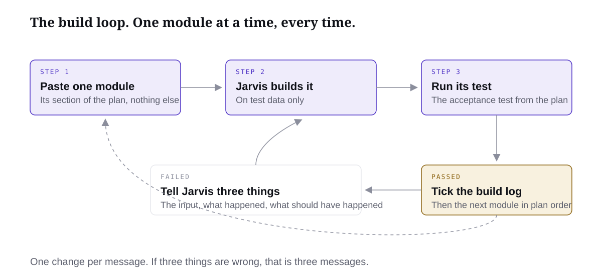
One module, one message, one test. Round and round until the last module passes.
Set up the shell first. The empty app, the empty tables, the connections to the tools with test credentials. Nothing clever. Confirm each connection reads and writes one record before moving on.
Build modules in the order the plan lists them, which should be the order a job moves through the system. Intake before processing, processing before output. Do not build the dashboard first. Nobody has ever been paid for a dashboard that shows nothing.
For each module, paste that module's section of the plan and ask for only that. When it is built, run its acceptance test. If it passes, move on. If not, fix that one thing before touching anything else.
Edge cases get their own messages. Build the happy path for a module, test it, then add each edge case from the plan as its own change: missing field, duplicate, uncertain match. Each one tested on its own.
Human steps get built as real steps. A status a person has to change, a message a person has to receive. Do not let Jarvis quietly automate a decision the plan says a person makes.
The build message I use every time
We are building module [number], [name], from this build plan [paste the plan once at the start of the session, then refer to it]. Build only this module. Here is its section of the plan: [paste]. Use the test data in [where it is]. Do not touch any other module. When it is done, tell me exactly what you built, what you did not build, and how I run the acceptance test for this module from the plan. If anything in the plan is unclear or impossible in this tool, stop and ask me before building.
Going back and forth
The build is a conversation. Jarvis builds a piece, you look at it with a real example in your hand, you say what is wrong in plain words, it fixes it. The skill is in how you describe what is wrong. "It doesn't work" produces guesses. "I sent the sample email with no phone number and it created a job with a blank phone field instead of flagging it for review like the plan says" produces a fix.
Describe the input, what happened, and what should have happened. Every time, in that order.
One fix per message. If three things are wrong, send three messages. Batching them is how the second fix undoes the first.
Ask it to explain before it changes anything big. "Before you change this, tell me in two sentences what you think is causing it." Half the time you will spot the real cause from the explanation.
Keep the client's live data out of the build. Every record you test on is made up or a sample with real names removed. The first time real data touches the system is the controlled go live in the handover lesson, with the client watching.
When to stop and get help
Some things are not worth a day of your time. If one integration has eaten more than a couple of hours, if the tool genuinely cannot do something the plan assumes, or if you have fixed the same bug three times, stop. Bring it to the weekly strategy session, or hand that one module to a developer from your bench at a fixed price while you keep building the rest. Handing off and building yourself are not a religion. Most people who have done a few deals do both inside the same one.
Illustrative, not a client result. You build an enquiry triage system for a plumbing business. Intake, classification and the job record take two evenings with Jarvis and pass their tests. Connecting to the client's booking tool needs an API you have never used. Instead of losing a weekend, you pay a developer from your bench a fixed $400 to wire that one connection against the plan's integration section, test it with the plan's acceptance test, and keep building the follow up module while you wait.
Track it like a project
Keep a build log in Jarvis against the deal: each module, built or not, tested or not, and anything the client still needs to send. You will use it in the next lesson for the end to end test, and at handover as the record of what was delivered.
Create a build log for the [client] deal from the build plan. One row per module with: built, acceptance test passed, edge cases done, and notes. Update it every time I tell you a module is done or a test has passed. Each time I ask, show me the log and tell me the next module to build in plan order and any client inputs still outstanding.
Set up the shell, build module one, run its test, tick the log. The rest of the modules are the same loop.
Module 7 · Fulfilment · Lesson 5 of 7
Self Fulfilment: Test It Like the Client Will
Clients do not use systems the way you built them. Find that out yourself, in private.
By the end you will have
A tested build with the edge cases handled and a dated test log you can show the client.
Every module passed its own test. That is not the same as the system working. The client is going to put a real job through it, start to finish, on a busy Tuesday, from their phone, with a typo in the email address. This lesson is short because the idea is simple: before the client sees it, you run it the way they will, end to end, and you fix what breaks in private.
Why I never skip this
The first time a client sees their system is the moment they decide whether you are a professional. If the first job they push through gets stuck, the build could be ninety five percent perfect and they will remember the five. If it runs clean, they will forgive small things for months. Testing is not about finding bugs. It is about controlling the first impression of something you have been paid five figures for.
It is also where the retainer gets sold without saying a word. A client who watches a system handle a messy edge case properly understands why it is worth paying to keep it running.
Three jobs, end to end
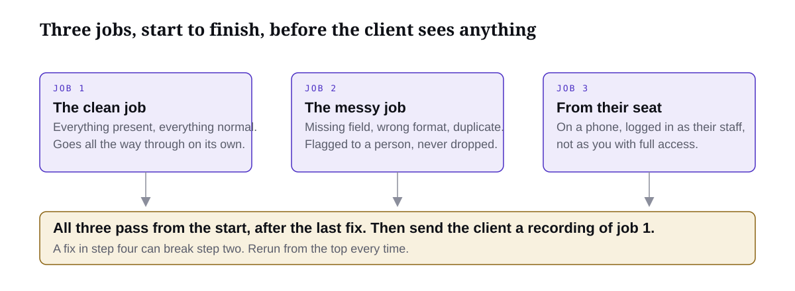
Module tests check parts. These three check the whole path.
The clean job. Everything present, everything normal. It should go all the way through with no human stepping in except where the plan says they do.
The messy job. A missing field, a wrong format, a duplicate of a job already in the system. Each should land where the plan says, flagged for a person, not silently dropped and not silently guessed.
The job from the client's seat. Do it on a phone, logged in as the role that will actually use it, not as you with full access. Half the problems you find will be about what that person can and cannot see.
Go back and forth with Jarvis exactly as you did in the build. Describe the input, what happened, what should have happened. One fix per message. Rerun the job after every fix, from the start, because a fix in step four can break step two.
Jarvis writes the checklist from the plan
From this build plan [paste] and this build log [paste], write me an end to end test checklist. Three test jobs: one clean, one with the edge cases from the plan's edge case section, and one run as the [client role] user on a phone. For each job list every step from first input to final output, what I should see at each step, and what counts as a fail. Add the human steps from the plan as explicit checks that a person is actually asked. Format it as a checklist I can tick, with a column for the result and a column for notes. Plain language, no technical terms the client would not understand, because I am going to show them this.
Keep the log
Write down what you ran, what failed, what you fixed, and that it passed on the rerun. Date it. This test log has three uses. It proves to you the system is ready. It becomes the first page of the handover, so the client sees the edge cases were thought about before they hit one. And it is the raw material for the case study at the end of this module.
If a developer built it, this lesson still applies to you. Do not accept the final milestone on their word. Run the three jobs yourself, on the recording or on the test system, and release payment when they pass. The acceptance tests in the plan are the contract.
Then show the client, a little
Once the three jobs pass clean, and only then, send the client a short screen recording of the clean job going through, with one line: "Here is a job going through your system start to finish. Handover is booked for [date] and I will walk you through it then." Do not send a login yet. Do not invite them to poke at it unsupervised. The handover lesson is where they get their hands on it, with you beside them.
Three passes from the start, dated, in the log. Then book the handover.
Module 7 · Fulfilment · Lesson 6 of 7
Onboard, Hand Over, Get Paid
As far as the client is concerned, the experience is the product. This is also where referrals get made or lost.
By the end you will have
A client onboarded, trained, signed off and invoiced, with everything tracked in your CRM.
The system works. Now it has to work for them, in their business, run by their people, with their real data. Handover is where a build becomes a result, and it is a process with steps, not a login sent by email. Done properly it takes one call and a week of light contact. Done badly it becomes a month of "quick questions" and a client who never quite trusts the thing they paid for.
Before you book the call
Three things are ready, and none of them are negotiable.
The test log is clean. Three end to end passes, dated. If a developer built it, you ran them yourself.
The client has done their part. Access to the live tools, the real records that will be loaded, the names of the people who will use it. The unknowns list from the plan is empty.
You know who is running the call. If you are not technical, the person who built it or someone technical from your bench is on the call with you, flicking the switches while you run the conversation. You do not want to be learning the system's internals in front of the person who paid for it. You own the relationship. They own the switches.
The weekly strategy session and my developer list are there for this moment too. Nobody should be doing their first handover alone.
The handover call
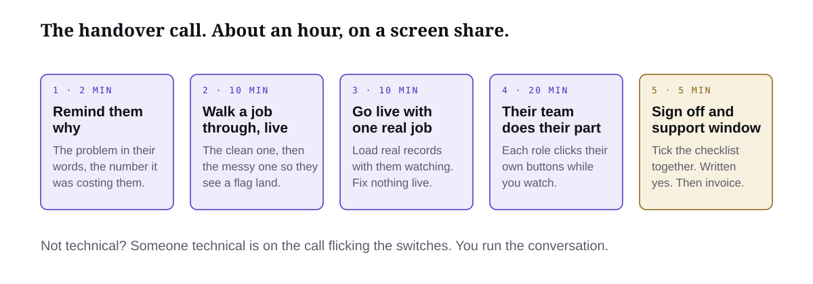
About an hour, on a screen share, with the owner and whoever will use it day to day.
Remind them what they bought and why. Two minutes. The problem in their words from call one, the number it was costing them, what this system does about it. They have been busy. Bring them back to the reason.
Walk the clean job through, live. The same job from your test, on the live system now. Say what is happening at each step and who gets told. Then do the messy job, so they see an edge case flagged to a person instead of disappearing. This is the single most trust building thing you will do.
Go live, with them watching. Load the first real records. Pick one real job that is actually in their business right now and push it through. Fix nothing on the fly. If something is wrong, note it and tell them when it will be fixed.
Train the people who will use it. Each role does their part once, themselves, while you watch. Not you doing it while they watch. A person who has clicked the button will click it again. A person who watched you click it will message you on Monday.
Sign off and the support window. Go through the acceptance tests from the plan on screen, tick them together, and ask the owner to confirm in writing that the build is delivered as scoped. Then tell them what the support window is, how to reach you, and what happens after it.
That is everything we scoped, built and tested. You have just watched a real job go through it and your team has run their parts. I am going to send you this checklist with what we ticked, and I need one line back from you confirming it is delivered as agreed. From today you have thirty days of support included: anything that does not behave the way we showed you, send it to me and it gets fixed, no charge. On day thirty we have a short call about keeping it running, which I will explain then.
Sign off, then invoice
The final invoice goes out the day you get the written sign off, not before. If your payment shape was a deposit and a balance on delivery, delivery means the sign off. Send the invoice with the ticked checklist and the test log attached, so the invoice is a record of what was delivered rather than a request for money. Clients who can see what they got pay faster.
If a developer built it, this is also the day you release their final milestone, against the same checklist.
The handover pack
One short document, sent the same day, written by Jarvis from the plan and the logs.
Section
Contents
What this system does
One paragraph in the owner's words, from the problem summary.
How a job moves through it
The clean path, step by step, with who does what at each human step.
What to do when something is flagged
Each edge case from the plan and what the person should do.
Logins and ownership
Who owns which account, where the system runs, what it costs to run each month and who pays it.
Support
The thirty day window, how to reach you, response times, what is included and what is a change request.
Checklist and test log
Ticked, dated, signed off.
Write the client handover pack for the [client] deal from this build plan [paste], this build log [paste] and this test log [paste]. Sections: what this system does, in the owner's words from the problem summary; how a job moves through it, step by step, with the human steps named by role; what to do when something is flagged, one short entry per edge case; logins and ownership, listing each account, who owns it, and the monthly running costs as separate lines; support, a thirty day window from [date] with [how to reach me] and [response time], and a plain line on what counts as a change request; and the acceptance checklist from the plan formatted to be ticked. Write it for the people who will use the system, not for a developer. No jargon. Short enough to read in ten minutes.
Track it in your CRM
Everything about this deal lives in one place: the proposal, the plan, the build log, the test log, the signed acceptance, the invoice, the support window dates and the day thirty call. When the client messages in week two with a question, you open one record and you know everything.
Mark the [client] deal as delivered. Record the sign off date, the invoice sent date and amount, the support window end date, and book a reminder for a day thirty retainer call. Attach the handover pack, test log and acceptance checklist to the deal. From now on, when I mention this client, show me the deal record first.
Book the call, decide who is running the technical side, get the written sign off, send the invoice the same day.
Module 7 · Fulfilment · Lesson 7 of 7
Support, Retainer and Raising the Price
The install was the start. Everything after it is margin, proof and a higher price next time.
By the end you will have
A retainer offered on your current deal, a case study drafted, and your next price written down.
You have been paid for the build. Three things happen in the next thirty days that decide whether that was one deal or the start of a business: you support it properly, you turn it into a monthly retainer, and you turn the result into the reason the next client pays more. None of them is hard. All of them get skipped by people who are already chasing the next sale.
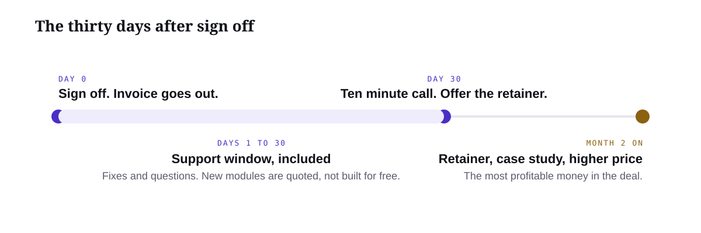
Thirty days, one call, then the most profitable money in the deal.
The thirty day support window
Support is included for thirty days from sign off and it is defined, not vague. Included: anything that does not behave the way it was shown at handover, questions from the people using it, and small adjustments to wording, notifications or who gets told what. Not included: new modules, new integrations, or anything that was on the follow on list. Those are change requests with a price, and you say so warmly the moment one comes up.
Reply inside a working day. Fix inside two for anything that stops a job moving. Keep every request in the deal record, because the list of what they asked for in the first month is the best evidence for what the retainer should cover.
What the retainer is
Systems do not run themselves. Tools update, a login expires, the client hires someone new who needs training, a volume spike shows an edge case nobody saw. The retainer is the monthly fee that keeps the system working and keeps you as the person they call. It is usually the most profitable money in the whole deal, because the work is light and it adds up across clients.
The retainer covers
What it means in practice
Hosting and running costs
The platform, the automation seats, the AI usage. Passed through with a margin on top. Illustrative: if it costs $300 a month to run, bill it at $400 to $450.
Monitoring
A weekly check that jobs are moving, flagged items are being cleared, and nothing has silently stopped. Jarvis can run most of this.
Small changes
A fixed allowance each month: wording, a new notification, a tweak to a rule. Anything bigger is quoted.
Support and training
Same response times as the support window, plus onboarding a new staff member when they hire.
A monthly report
One page: jobs through the system, time it saved, what was flagged, what changed. This is also your case study being written for you every month.
Price it as a flat monthly figure that covers the running costs with margin plus your time. Keep it simple enough to say in one sentence. The numbers here are illustrative; your running costs and the size of the system set the real one, and we will pressure test it in the group session.
How to offer it on the day thirty call
You booked this call at handover, so it is expected. It is ten minutes. Open with the month's numbers, then offer the retainer as the way to keep what they have. Nobody is being sold anything they have not already experienced.
Thirty days in. [Number] jobs have gone through the system, [number] were flagged for your team and cleared, and you have not had to chase a quote by hand since we went live. Two things I want to put to you. First, the system needs someone keeping it running. The tools it sits on change, your team changes, and it costs [amount] a month in platforms to run. Second, you have already asked for [the follow on items], which I noted and did not build for free. The retainer is [amount] a month. It covers the running costs, me watching it weekly, small changes as you need them, support for your team, and a one page report every month. The follow on work gets quoted separately when you want it. Want me to send that over so it starts from the first?
If they say not now, the running costs still have to be paid by someone. Transfer the accounts to them cleanly, tell them the door is open, and set a reminder in Jarvis for sixty days. A good number come back the first time something breaks.
Write the case study now
The test log, the build log and the first monthly report are a case study that has not been written yet. Write it in the first month, while the numbers are fresh and the client is pleased, and always get their written permission before anything goes on a public page, an ad or a call.
Write a one page case study from the [client] deal record: the problem in the client's words from the call one brief, what it was costing them, what we built in plain language, the before and after of how a job moves, and the results from the first monthly report with the actual numbers from the system. Separate time saved from money saved and keep revenue claims out unless the client gave us a figure. Mark any number that is an estimate. Write it so a similar business owner would recognise themselves in the first paragraph. Then write a two sentence version I can say on a call. Do not publish anything; I will get the client's written permission first.
Raise the price
Your next price is set by your last result, not by your confidence. Before this deal you were selling a promise. After it you are selling a thing that exists, with a number next to it, and that is worth more. The pricing method from the sales module does not change, the build is still priced against what the problem costs, but your range inside it moves up, and the proposal now opens with proof instead of a hypothesis.
Put the two sentence version of the case study into call one, right after you have found the pain: "we did this for a [similar business] last month."
Add the retainer to every proposal from now on as a standard line, not an afterthought.
Decide the next price today, write it in your offer document, and tell the group session what it is so someone holds you to it.
Illustrative, not a client result. You sell your first quoting system for $9,000 with no retainer. On day thirty you offer a $600 a month retainer and the client takes it. The case study shows quotes going out the same day instead of in three. Your next proposal for a similar business opens with that result, prices the build at $14,000 against a bigger problem cost, and includes the retainer from the start. Same work. One proof point.
Offer the retainer, draft the case study, write the new price down and tell someone.